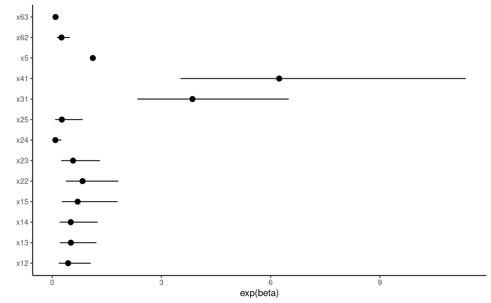
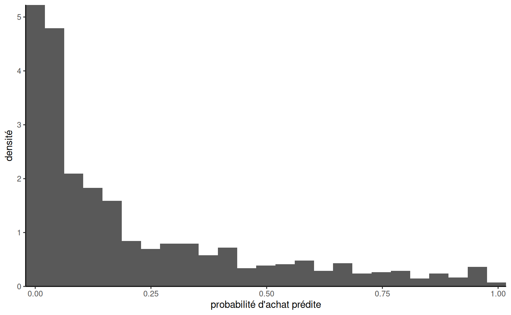
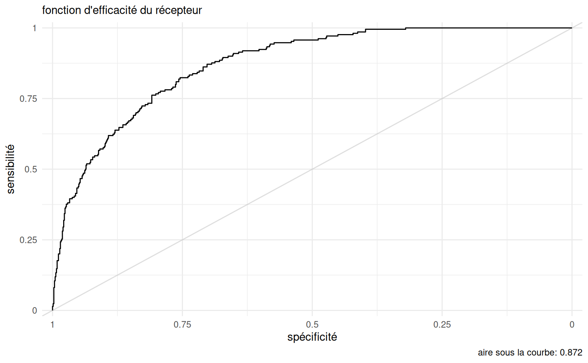
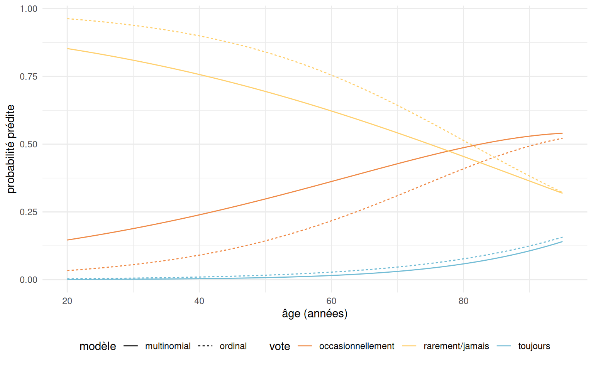

5 Régression logistique
MATH 60602 - Analyse multidimensionnelle appliquée, HEC Montréal.
5.1 Introduction
En régression linéaire, on cherche à expliquer le comportement d’une variable quantitative \(Y\) que l’on peut traiter comme étant continue (elle peut prendre suffisamment de valeurs différentes).
Supposons à présent que l’on veut expliquer le comportement d’une variable \(Y\) prenant seulement deux valeurs que l’on va noter 0 et 1.
Exemples :
- Est-ce qu’un client potentiel va répondre favorablement à une offre promotionnelle?
- Est-ce qu’un client est satisfait du service après-vente?
- Est-ce qu’un client va faire faillite ou non au cours des trois prochaines années.
En général, on cherchera à expliquer le comportement d’une variable binaire \(Y\) en utilisant un modèle basé sur \(p\) variables explicatives \(\mathrm{X}_1, \ldots, \mathrm{X}_p\).
Notre but sera de faire de l’inférence, de la prédiction, ou les deux à la fois, soit
- Inférence : comprendre comment et dans quelles mesures les variables \(\mathbf{X}\) influencent \(Y\) (ou bien la probabilité que \(Y=1\)).
- Prédiction : développer un modèle pour prévoir des valeurs de \(Y\) futures à partir des variables \(\mathbf{X}\).
5.2 Modèle de régression logistique
Avec une variable réponse continue, le modèle de régression linéaire, \[\begin{align*} Y = \beta_0 + \beta_1\mathrm{X}_1 + \cdots + \beta_p \mathrm{X}_p + \varepsilon, \end{align*}\] avec \(\mathsf{E}(\varepsilon \mid \mathbf{X})=0\) et \(\mathsf{Va}(\varepsilon \mid \mathbf{X})=\sigma^2\), peut être écrit de manière équivalente comme \(\mathsf{E}(Y \mid \mathbf{X}) = \beta_0 + \beta_1\mathrm{X}_1 + \cdots + \beta_p\mathrm{X}_p\) et \(\mathsf{Va}(Y \mid \mathbf{X})=\sigma^2.\)
Si \(Y\) est binaire (0/1), on peut facilement vérifier que \[\begin{align*} \mathsf{E}(Y \mid \mathbf{X}) = \Pr(Y=1 \mid \mathbf{X}), \end{align*}\] soit la probabilité que \(Y\) égale 1 étant donné les valeurs des variables explicatives. Pour simplifier la notation, posons la probabilité de succès \(p = \Pr(Y=1 \mid \mathbf{X})\) en se rappelant que \(p\) est une fonction des variables explicatives.
À première vue, on peut se demander pourquoi ne pas utiliser le même modèle que la régression linéaire, c’est-à-dire \[\begin{align*} \eta=\beta_0 + \beta_1\mathrm{X}_1 + \cdots + \beta_p \mathrm{X}_p. \end{align*}\]

La Figure 5.1 montre le modèle de régression linéaire (bleu) et le modèle logistique. La pente pour la ligne bleu correspond à l’augmentation (réputée constante) de la probabilité d’approbation de crédit, de l’ordre de 11% par augmentation de 0.1 du rapport paiements hypothécaires sur revenu.
Il y a quelques problèmes avec le modèle linéaire. D’abord, les données binaires ne respectent pas le postulat d’égalité des variances, ce qui rend les tests d’hypothèses caducs. Le problème principal est que \(p\) est une probabilité. Par conséquent \(p\) prend seulement des valeurs entre 0 et 1 alors que rien n’empêche \(\eta\) de prendre des valeurs dans \(\mathbb{R}=(-\infty, \infty)\): par exemple, on voit que la droite de la Figure 5.1 retourne des prédictions négatives dès que le ratio paiements/revenus est en dessous de 0.094: on peut évidemment tronquer ces prédictions à zéro, mais cela sous-tend que la probabilité d’acceptation est nulle, alors que certaines personnes dans l’échantillon ont reçu un prêt.
Une façon de résoudre ce problème consiste à appliquer une transformation à \(p\) de telle sorte que la quantité transformée puisse prendre toutes les valeurs entre \(-\infty\) et \(\infty\). Le modèle de régression logistique est défini à l’aide de la transformation \(\textrm{logit}\), \[\begin{align*} \textrm{logit}(p) = \ln\left( \frac{p}{1-p}\right)=\eta=\beta_0 + \beta_1\mathrm{X}_1 + \cdots + \beta_p \mathrm{X}_p, \end{align*}\] où \(\ln\) est le logarithme naturel.
En régression linéaire, on suppose que l’espérance de \(Y\) étant donné les valeurs des variables explicatives est une combinaison linéaire de ces dernières. En régression logistique, on suppose que le logit de la probabilité de succès est une combinaison linéaire des variables explicatives.
Une simple manipulation algébrique permet d’exprimer ce modèle en terme de la probabilité \(p\), \[\begin{align*} p &= \textrm{expit}(\eta) = \frac{\exp(\eta)}{1+\exp(\eta)} = \frac{1}{1+\exp(-\eta)}. \end{align*}\] On peut voir qu’à mesure que le prédicteur linéaire \(\eta=\beta_0+\beta_1\mathrm{X}_1 + \cdots + \beta_p\mathrm{X}_p\) augmente, la probabilité augmente. Si le coefficient \(\beta_j\) est négatif, \(p\) diminuera à mesure que \(\mathrm{X}_j\) augmente.

Pour une variable binaire \(Y\), le rapport \(p/(1-p)\) est appelé cote et représente le ratio de la probabilité de succès (\(Y=1\)) sur la probabilité d’échec (\(Y=0\)), \[\begin{align*} \mathsf{cote}(p) = \frac{p}{1-p} = \frac{\Pr(Y=1 \mid \mathbf{X})}{\Pr(Y=0 \mid \mathbf{X})}. \end{align*}\]
Par exemple, une cote de 4 veut dire qu’il y a 4 fois plus de chance que \(Y\) soit égale à \(1\) par rapport à \(0\). Une cote de 0.25 veut dire le contraire, il y a 4 fois moins de chance que \(Y=1\) par rapport à \(0\) ou bien, de manière équivalente, il y a 4 fois plus de chance que \(Y=0\) par rapport à \(1\). Le Tableau 5.1 donne un aperçu de cotes pour quelques probabilités \(p\).
| \(\Pr(Y=1)\) | 0.1 | 0.2 | 0.3 | 0.4 | 0.5 | 0.6 | 0.7 | 0.8 | 0.9 |
|---|---|---|---|---|---|---|---|---|---|
| cote | 0.11 | 0.25 | 0.43 | 0.67 | 1 | 1.5 | 2.3 | 4 | 9 |
| \(\frac{1}{9}\) | \(\frac{1}{4}\) | \(\frac{3}{7}\) | \(\frac{2}{3}\) | \(1\) | \(\frac{3}{2}\) | \(\frac{7}{3}\) | \(4\) | \(9\) |
5.2.1 Estimation et interprétation des paramètres
Supposons qu’on dispose d’un échantillon de taille \(n\) sur les variables \((Y, \mathrm{X}_1, \ldots, \mathrm{X}_p)\). À l’aide de ces observations, on peut estimer les paramètres \(\boldsymbol{\beta} = (\beta_0, \beta_1 ,\ldots, \beta_p)\) du modèle de régression logistique \[\begin{align*} \textrm{logit}(p) = \ln \left( \frac{p}{1-p}\right) = \beta_0 + \beta_1 \mathrm{X}_1 + \cdots + \beta_p\mathrm{X}_p. \end{align*}\] On obtient ainsi les estimés des paramètres \(\widehat{\boldsymbol{\beta}}\), desquels découle une estimation de \(\Pr(Y=1)\) pour les valeurs \(\mathrm{X}_1=x_1, \ldots, \mathrm{X}_p=x_p\) d’un individu donné, \[\begin{align*} \widehat{p} = \textrm{expit}(\widehat{\beta}_0 + \cdots + \widehat{\beta}_p\mathrm{X}_p). \end{align*}\]
Un modèle ajusté peut ensuite être utilisé pour faire de la classification (prédiction) pour de nouveaux individus pour lesquels la variable réponse \(Y\) n’est pas observée. Pour ce faire, on choisit un point de coupure \(c\) (souvent \(c=0.5\) mais pas toujours) et on classifie les observations en deux groupes:
- Si \(\widehat{p}< c\), alors \(\widehat{Y}=0\) (c’est-à-dire, on assigne cette observation à la catégorie 0 ou échec).
- Si \(\widehat{p} \geq c\), alors \(\widehat{Y}=1\) (c’est-à-dire, on assigne cette observation à la catégorie 1 ou succès).
On reviendra en détail sur cet aspect dans une section suivante.
La méthode d’estimation des paramètres usuelle est la méthode du maximum de vraisemblance. Pour les applications, il est suffisant de savoir manipuler trois quantités importantes: la log-vraisemblance, le \(\mathsf{AIC}\) et le \(\mathsf{BIC}\). Les deux critères d’information, que nous avons couvert dans les chapitres précédents, servent à la sélection de modèles tandis que la log-vraisemblance \(\ell\) servira à construire un test d’hypothèse.
5.2.2 Méthode du maximum de vraisemblance
Cette sous-section est facultative. Elle donne plus de détails sur la méthode du maximum de vraisemblance et les quantités en découlant, soit \(\mathsf{AIC}\), \(\mathsf{BIC}\) et \(\ell(\widehat{\boldsymbol{\beta}})\).
La méthode du maximum de vraisemblance (maximum likelihood) est possiblement la méthode d’estimation la plus utilisée en statistique. En général, pour un échantillon donné et un modèle avec des paramètres inconnus \(\boldsymbol{\theta}\), on peut calculer la « probabilité » d’avoir obtenu les observations de notre échantillon selon les paramètre. Si on traite cette « probabilité » comme étant une fonction des paramètres du modèle, \(\boldsymbol{\theta}\), on l’appelle alors la vraisemblance (likelihood). La méthode du maximum de vraisemblance consiste à trouver les valeurs des paramètres qui maximisent la vraisemblance. On cherche donc les estimations qui sont les plus vraisemblables étant donné nos observations.
En pratique, il est habituellement plus simple de chercher à maximiser le log de la vraisemblance (ce qui revient au même car le logarithme naturel est une fonction croissante) et on nomme cette fonction la log-vraisemblance (log-likelihood).
Vous connaissez déjà des exemples d’estimateurs du maximum de vraisemblance. La moyenne d’un échantillon est l’estimateur du maximum de vraisemblance pour la moyenne de la population \(\mu\) si les observations représentent un échantillon aléatoire simple tiré d’une loi normale.
Dans le cas d’un modèle de régression linéaire multiple de la forme \(Y_i \sim \mathsf{No}(\beta_0 + \sum_{j=1}^p \beta_j\mathrm{X}_{ij}, \sigma^2)\) des termes indépendants et de même loi, la log-vraisemblance du modèle pour un échantillon de taille \(n\) est \[\begin{align*} \ell(\boldsymbol{\beta}, \sigma^2) =- \frac{n}{2} \ln(2\pi\sigma^2) - \frac{1}{2\sigma^2}\sum_{i=1}^n (Y_i- \beta_0 - \beta_1 \mathrm{X}_{1i} - \cdots - \beta_p\mathrm{X}_{ip})^2. \end{align*}\] Puisque le premier terme ne dépend pas des paramètres \(\boldsymbol{\beta}\), il est clair que maximiser cette fonction de \(\boldsymbol{\beta}\) revient à minimiser \(\sum_{i=1}^n (Y_i- \beta_0 - \beta_1 \mathrm{X}_{1i} - \cdots - \beta_p\mathrm{X}_{ip})^2\): ce critère est exactement le même que celui des moindres carrés. Par conséquent, les estimations des paramètres \(\boldsymbol{\beta}\) provenant de la méthode des moindres carrés peuvent être vues comme étant des estimateurs du maximum de vraisemblance sous l’hypothèse de normalité et d’homoscédasticité des observations; il est même possible d’obtenir une formule explicite pour le calcul dest estimateurs.
Dans le cas de la régression logistique, la fonction de log-vraisemblance s’écrit \[\begin{align*} \ell(\boldsymbol{\beta}) &= \sum_{i=1}^n Y_i ( \beta_0 + \beta_1 \mathrm{X}_{i1} + \cdots + \beta_p \mathrm{X}_{ip}) \\&- \sum_{i=1}^n \ln\left\{1+\exp(\beta_0 + \cdots + \beta_p\mathrm{X}_{ip})\right\} \end{align*}\]
Contrairement au cas de la régression linéaire, on ne peut trouver une solution explicite pour les valeurs des paramètres qui maximisent cette fonction. Des méthodes numériques doivent être utilisées pour l’optimisation. Une fois la maximisation accomplie, on obtient les estimés du maximum de vraisemblance, \(\widehat{\boldsymbol{\beta}}\). On peut alors calculer la valeur maximale (numérique) de la log-vraisemblance, \(\ell(\widehat{\boldsymbol{\beta}})\). Par analogie avec la régression linéaire la valeur de la log-vraisemblance évaluée à \(\widehat{\boldsymbol{\beta}}\), \(\ell(\widehat{\boldsymbol{\beta}})\), augmente toujours lorsqu’on ajoute des régresseurs et c’est pourquoi on ne pourra pas l’utiliser comme outil de sélection de variables.
Les critères d’information sont des fonctions de la log-vraisemblance, mais incluent une pénalité pour le nombre de coefficients \(\boldsymbol{\beta}\), \[\begin{align*} \mathsf{AIC} & = -2 \ell(\widehat{\boldsymbol{\beta}}) + 2(p+1)\\ \mathsf{BIC} & = -2 \ell(\widehat{\boldsymbol{\beta}}) + \ln(n)(p+1) \end{align*}\]
Ces définitions sont utilisables dans plusieurs situations lorsque le modèle est ajusté par la méthode du maximum de vraisemblance. Tout comme en régression linéaire et en analyse factorielle, ces deux critères pourront être utilisés pour faire de la sélection de modèles si on calcule les estimateurs du maximum de vraisemblance.
5.2.3 Exemple du Professional Rodeo Cowboys Association
L’exemple suivant est inspiré de l’article
Daneshvary, R. et Schwer, R. K. (2000) The Association Endorsement and Consumers’ Intention to Purchase. Journal of Consumer Marketing 17, 203-213.
Dans cet article, les auteurs cherchent à voir si le fait qu’un produit soit recommandé par le Professional Rodeo Cowboys Association (PRCA) a un effet sur les intentions d’achats. On dispose de 500 observations sur les variables suivantes:
- \(Y\): seriez-vous intéressé à acheter un produit recommandé par le PRCA
- \(\texttt{0}\): non
- \(\texttt{1}\): oui
- \(\mathrm{X}_1\): quel genre d’emploi occupez-vous?
- \(\texttt{1}\): à la maison
- \(\texttt{2}\): employé
- \(\texttt{3}\): ventes/services
- \(\texttt{4}\): professionnel
- \(\texttt{5}\): agriculture/ferme
- \(\mathrm{X}_2\): revenu familial annuel
- \(\texttt{1}\): moins de 25 000
- \(\texttt{2}\): 25 000 à 39 999
- \(\texttt{3}\): 40 000 à 59 999
- \(\texttt{4}\): 60 000 à 79 999
- \(\texttt{5}\): 80 000 et plus
- \(\mathrm{X}_3\): sexe
- \(\texttt{0}\): homme
- \(\texttt{1}\): femme
- \(\mathrm{X}_4\): avez-vous déjà fréquenté une université?
- \(\texttt{0}\): non
- \(\texttt{1}\): oui
- \(\mathrm{X}_5\): âge (en années)
- \(\mathrm{X}_6\): combien de fois avez-vous assisté à un rodéo au cours de la dernière année?
- \(\texttt{1}\): 10 fois ou plus
- \(\texttt{2}\): entre six et neuf fois
- \(\texttt{3}\): cinq fois ou moins
Le but est d’examiner les effets de ces variables sur l’intentions d’achat (\(Y\)). Les données se trouvent dans la base de données logit1.
5.2.4 Modèle avec une seule variable explicative
Faisons tout d’abord une analyse en utilisant seulement \(\mathrm{X}_5\) (âge) comme variable explicative. L’ajustement du modèle de régression incluant uniquement \(\mathrm{X}_5\) sera effectuée en exécutant le programme
data(logit1, package = "hecmulti")
# Nombre d'observations par groupe
with(logit1, table(y))
# Ajustement du modèle avec une
# seule variable explicative
modele1 <- glm(formula = y ~ x5,
family = binomial(link = "logit"),
data = logit1)
# Tableau résumé avec coefficients
summary(modele1)
# Cote
cote <- exp(modele1$coefficients)
# Intervalles de confiance profilés
# pour les paramètres betas
confbeta <- confint(modele1)
# Intervalles de confiance pour la cote
exp(confbeta)
# Tester la significativité globale
# à l'aide du rapport de vraisemblance
anova(modele1, test = 'Chisq')
# Critères d'information
np <- length(coef(modele1))
n <- nrow(logit1)
AIC(modele1)
# -2*logLik(modele1) + 2*np
BIC(modele1)
# -2*logLik(modele1) + log(n)*npPar défaut, pour des variables \(0/1\), le modèle décrit la probabilité de succès. On peut transformer la variable réponse en facteur (factor) et changer la catégorie de référence via relevel pour obtenir le modèle \(\Pr(Y=0 \mid \mathrm{X}_5)\).
nlogit1 <- logit1 |>
dplyr::mutate(y = relevel(factor(y), "1"))
glm(formula = y ~ x5,
family = binomial(link = "logit"),
data = nlogit1)Quelques observations sur l’échantillon et les données:
- On voit qu’il y a 272 personnes (\(\texttt{0}\)) qui ne sont pas intéressées à acheter un produit recommandé par le PRCA et 228 personnes (\(\texttt{1}\)) qui le sont.
- Les estimés des paramètres sont \(\widehat{\beta}_0 = -3.05\) et \(\widehat{\beta}_{\texttt{age}}=0.0749\).
- Un intervalle de confiance de niveau 95% pour l’effet de l’âge est [\(0.0465; 0.1043\)].
- Le modèle ajusté est \(\textrm{logit}\{\Pr(Y=1 \mid \mathrm{X}_5=x_5)\} = -3.05 + 0.0749 x_5\). On peut également exprimer ce modèle directement en terme de la probabilité de succès, \[\begin{align*} \Pr(Y=1 \mid \mathrm{X}_5=x_5) &= \textrm{expit}(-3.05 + 0.0749 x_5) \\&= \frac{1}{1+\exp(-3.05 - 0.0749 x_5)} \end{align*}\] Le graphe de cette fonction pour \(\mathrm{X}_5\) allant de 18 à 59 ans, respectivement les valeurs minimales et maximales observées dans l’échantillon, montre que le lien entre l’âge et \(p\) est presque linéaire entre 20 et 60 ans. On décèle tout de même la forme sigmoide de la fonction \(\textrm{logit}\) aux deux extrémités.

- La valeur-\(p\) pour \(\widehat{\beta}_{\texttt{age}}\) correspondant au test des hypothèses \(\mathscr{H}_0: \beta_{\texttt{age}}=0\) versus \(\mathscr{H}_1: \beta_{\texttt{age}} \neq 0\), est plus petite que \(10^{-4}\) et donc l’effet de la variable âge est statistiquement différent de zéro. Plus l’âge augmente, plus la probabilité d’être intéressé à acheter un produit recommandé par le PRCA augmente.
5.2.5 Interprétation du paramètre
Si une variable est modélisée à l’aide d’un seul paramètre (pas de terme quadratique et pas d’interaction avec d’autre covariables), une valeur positive du paramètre indique une association positive avec \(p\) alors qu’une valeur négative indique le contraire.
Ainsi, le signe du paramètre donne le sens de l’association. Si le coefficient \(\beta_j\) de la variable \(\mathrm{X}_j\) est positif, alors plus la variable augmente, plus \(\Pr(Y=1)\) augmente. Inversement, si le coefficient \(\beta_j\) est négatif, plus la variable augmente, plus \(\Pr(Y=1)\) diminue.
En régression linéaire, l’interprétation de coefficient \(\beta_j\) est simple: lorsque la variable \(\mathrm{X}_j\) augmente de un, la variable \(Y\) augmente en moyenne de \(\beta_j\), toute chose étant égale par ailleurs. Cette interprétation ne dépend pas de la valeur de \(\mathrm{X}_j\). En régression logistique, comme le modèle est nonlinéaire en fonction de \(\Pr(Y=1)\) (courbe sigmoide), l’augmentation ou la dimininution de \(\Pr(Y=1\mid \mathbf{X})\) pour un changement d’une unité de \(\mathrm{X}_j\) dépend de la valeur de cette dernière. C’est pourquoi il est parfois plus utile d’utiliser la cote pour interpréter globalement l’effet d’une variable.
Dans notre exemple, on peut exprimer le modèle ajusté en termes de cote, \[\begin{align*} \frac{\Pr(Y=1 \mid \mathrm{X}_5=x_5)}{\Pr(Y=0 \mid \mathrm{X}_5=x_5)} = \exp(-3.05)\exp(0.0749x_5). \end{align*}\] Ainsi, lorsque \(\mathrm{X}_5\) augmente d’une année, la cote est multipliée par \(\exp(0.0749) = 1.078\) peut importe la valeur de \(x_5\). Pour deux personnes dont la différence d’âge est un an, la cote de la personne plus âgée est 7.8% plus élevée. On peut aussi quantifier l’effet d’une augmentation d’un nombre d’unités quelconque. Par exemple, pour chaque augmentation de 10 ans de \(\mathrm{X}_5\), la cote est multiplié par \(1.078^{10} = 2.12\), soit une augmentation de 112%.
L’interprétation des coefficients du modèle logistique se fait au niveau du rapport de cote, à savoir \(\exp(\beta)\).
Un des avantages d’utiliser la vraisemblance comme fonction objective est que les intervalles de confiance et les estimateurs basés sur la vraisemblance (profilée) sont invariant aux reparamétrisations: l’intervalle de confiance à niveau 95% pour \(\exp(\beta_{\texttt{age}})\) est obtenu en prenant l’exponentielle des bornes de l’intervalle pour \(\beta_{\texttt{age}}\), [\(\exp(0.0465); \exp(0.1043)\)], soit [\(1.048; 1.110\)] tel que rapporté dans la sortie. Ce n’est pas le cas des intervalles usuels de Wald qui ont la forme \(\widehat{\beta} \pm 1.96 \mathrm{se}(\widehat{\beta})\).
Comme l’exponentielle est une transformation monotone croissante, on a \(\beta>0\) si et seulement si \(\exp(\beta)>1\), etc. On peut ainsi utiliser les intervalles de confiance pour tester l’hypothèse \(\mathscr{H}_0: \beta_j=0\) ou de façon équivalente \(\mathscr{H}_0: \exp(\beta_j)=1\) à niveau 95%.
Ajustons à présent le modèle avec toutes les variables explicatives. Rappelez-vous que la variable \(\mathrm{X}_1\) (quel genre d’emploi occupez-vous) a cinq catégories, \(\mathrm{X}_2\) (revenu familial annuel) a cinq catégories, et \(\mathrm{X}_6\) (combien de fois avez-vous assisté à un rodéo au cours de la dernière année) a trois catégories. Notez qu’on pourrait aussi traiter \(\mathrm{X}_2\) comme continue car elle est ordinale et possède tout de même cinq modalités, mais on la traitera comme variable nominale.
Les variables de type factor sont modélisées par défaut à l’aide d’un ensemble de variables indicatrices, la catégorie de référence étant celle qui apparaît en dernier en ordre alphabétique.
str(logit1)
modele2 <- glm(
y ~ x1 + x2 + x3 + x4 + x5 + x6,
data = logit1,
family = binomial(link = "logit")
)
summary(modele2)
ic <- confint(modele2)
# Tests de rapport de vraisemblance
car::Anova(modele2, type = "3")| variables | cote1 | IC 95%1 | valeur-p |
|---|---|---|---|
| x1 | 0.4 | ||
| 1 | — | — | |
| 2 | 0.44 | 0.18, 1.06 | |
| 3 | 0.51 | 0.21, 1.21 | |
| 4 | 0.51 | 0.21, 1.25 | |
| 5 | 0.70 | 0.27, 1.80 | |
| x2 | <0.001 | ||
| 1 | — | — | |
| 2 | 0.83 | 0.38, 1.82 | |
| 3 | 0.57 | 0.25, 1.31 | |
| 4 | 0.09 | 0.03, 0.25 | |
| 5 | 0.26 | 0.08, 0.84 | |
| x3 | <0.001 | ||
| 0 | — | — | |
| 1 | 3.85 | 2.34, 6.50 | |
| x4 | <0.001 | ||
| 0 | — | — | |
| 1 | 6.24 | 3.53, 11.4 | |
| x5 | 1.12 | 1.08, 1.16 | <0.001 |
| x6 | <0.001 | ||
| 1 | — | — | |
| 2 | 0.25 | 0.13, 0.49 | |
| 3 | 0.09 | 0.04, 0.18 | |
| 1 cote = rapport de cote, IC = intervalle de confiance | |||

| AIC | BIC | log.vrais. | |
|---|---|---|---|
| modèle ajusté | 544.20 | 603.20 | -258.1 |
| modèle nul | 691.27 | 695.48 | -258.1 |
L’interprétation se fait comme en régression linéaire multiple puisqu’il n’y a pas ni terme quadratique, ni interaction. Les paramètres estimés représentent donc l’effet de la variable correspondante sur le logit une fois que les autres variables sont dans le modèle, et demeurent fixes.
Prenons le coefficient associé à l’âge (\(\mathrm{X}_5\)) comme exemple. Le paramètre estimé est \(\widehat{\beta}_{\texttt{age}}=0.109\) et il est significativement différent de zéro. Ainsi, plus l’âge augmente, plus \(\Pr(Y=1\mid \mathbf{X})\) augmente, toutes autres choses étant égales par ailleurs. Pour chaque augmentation d’un an de \(\mathrm{X}_5\), la cote est multipliée par \(\exp(0.109)=1.116\), lorsque les autres variables demeurent fixes.
N’oubliez pas la nuance suivante concernant l’interprétation d’un test lorsque plusieurs variables explicatives font partie du modèle. Si un paramètre n’est pas significativement différent de zéro, cela ne veut pas dire qu’il n’y a pas de lien entre la variable correspondante et \(Y\). Cela veut seulement dire qu’il n’y a pas de lien significatif une fois que les autres variables sont dans le modèle.
L’interprétation des variables catégorielles est analogue à celle faite en régression linéaire. On peut aussi interpréter individuellement les paramètres des indicatrices: pour \(\mathrm{I}(\mathrm{X}_6=2)\), lorsque les autres variables demeurent fixes, les personnes ayant assisté entre six et 10 fois à un rodéo au cours de la dernière année voient leur cote multipliée par \(\exp(-1.370)=0.255\) par rapport aux personnes ayant assisté plus de di fois. Ce paramètre est significativement différent de zéro car sa valeur-\(p\) est négligeable; l’intervalle de confiance à 95% pour le rapport de cotes, basé sur la vraisemblance profilée, est [0.13; 0.49] et la valeur 1 (qui correspond à un rapport de cote constant) n’est pas dans l’intervalle. Ainsi, il y a une différence significative entre les gens qui ont assisté à 10 rodéos ou plus et les gens qui ont assisté à 5 rodéos ou moins, pour ce qui est de l’intérêt à acheter un produit recommandé par le PRCA.
Si on désire comparer les deux modalités \(\mathrm{X}_6=2\) et \(\mathrm{X}_6=3\), il suffit de changer la modalité de référence de x6 et d’exécuter le modèle à nouveau. Une alternative est de calculer le rapport de cotes pour ces deux modalités.
5.2.6 Test du rapport de vraisemblance
Les tests rapportés d’ordinaire dans le tableau avec les coefficients (et correspondants aux valeurs-\(p\)) sont des tests de Wald, à savoir \(W = \widehat{\beta}/\widehat{\mathsf{se}}(\widehat{\beta})\). Ces tests feront l’affaire dans la plupart des applications. Par contre, il existe un autre test qui est généralement plus puissant, c’est-à-dire qu’il sera meilleur pour détecter que \(\mathscr{H}_0\) n’est pas vraie lorsque c’est effectivement le cas. Ce test est le test du rapport de vraisemblance (likelihood ratio test). Il découle de la méthode d’estimation du maximum de vraisemblance et est donc généralement applicable lorsqu’on estime les paramètres avec cette méthode. Il est basé sur la quantité \(\ell\) que nous avons vue plus tôt.
La procédure consiste à ajuster deux modèles emboîtés:
- Le premier modèle, le modèle complet, contient tous les paramètres et l’estimateur du maximum de vraisemblance \(\widehat{\boldsymbol{\beta}})\).
- Le deuxième modèle correspondant à l’hypothèse nulle \(\mathscr{H}_0\), le modèle réduit, contient tous les paramètres avec les restrictions imposées sous \(\mathscr{H}_0\); on dénote l’estimateur du maximum de vraisemblance \(\widehat{\boldsymbol{\beta}}_0\)
Le test est basé sur la statistique \[\begin{align*} D = -2\{\ell(\widehat{\boldsymbol{\beta}}_0)-\ell(\widehat{\boldsymbol{\beta}})\}. \end{align*}\] Cette différence \(D\), lorsque l’hypothèse \(\mathscr{H}_0\) est vraie suit approximativement une loi khi-deux avec un nombre de degrés de liberté égal au nombre de paramètre testé (le nombre de restrictions sous \(\mathscr{H}_0\)). On peut donc calculer la valeur-\(p\) en utilisant la distribution du khi-deux.
Prenons comme exemple le test de la significativité de \(\mathrm{X}_6\), qui est modélisée à l’aide deux variables binaires et dont les paramètres correspondants sont \(\beta_{6_{\texttt{2}}}\) et \(\beta_{6_{\texttt{3}}}\). Pour effectuer le test du rapport de vraisemblance, il suffit de retirer la variable \(\mathrm{X}_6\) et de réajuster le modèle à nouveau avec toutes les autres variables.
# Ajuster modèle sous H0 (sans X6)
modeleH0 <- update(modele2, formula. = ". ~ . - x6")
anova(modeleH0, modele2, test = "LRT")
# Le modèle 'modeleH0' est équivalent à
# glm(y ~ x1 + x2 + x3 + x4 + x5,
# data = logit1,
# family = binomial(link = "logit"))
## Calculer statistique du test manuellement
## Deviance = -2*log vraisemblance
rvrais <- modeleH0$deviance - modele2$deviance
# Valeur-p
pchisq(rvrais, df = 2, lower.tail = FALSE)Considérons maintenant la variable \(\mathrm{X}_6\), qui représente le nombre de fois où l’individu a assisté à un rodéo au cours de la dernière année. Cette variable est modélisée à l’aide de deux variables indicatrices, \(\mathrm{I}(\mathrm{X}_6=2)\) égale à un si \(\mathrm{X}_6=2\) et zéro autrement, et \(\mathrm{I}(\mathrm{X}_6=3)\) égale à un si \(\mathrm{X}_6=3\) et zéro sinon. La catégorie de référence est \(\mathrm{X}_6=1\), c’est-à-dire les personnes ayant assisté plus de 10 fois à un rodéo au cours de la dernière année. Pour tester la significativité globale d’une variable catégorielle qui est modélisée avec plusieurs indicatrices, il faut utiliser un test qui compare l’ajustement du modèle avec ou sans toutes les variables binaires associées à \(\mathrm{X}_6\); l’hypothèse nulle \(\mathscr{H}_0: \beta_{6_{\texttt{2}}}=\beta_{6_{\texttt{3}}}=0\) versus l’alternative qu’au moins un de ces deux paramètres est différent de zéro. La statistique du test de rapport de vraisemblance \(D\) de 50.251 et la valeur-\(p\) peut-être obtenue de la loi du khi-deux avec 2 degrés de liberté via le code suivant permet d’imprimer la valeur-\(p\), qui est \(1.22 \times 10^{-11}\).
5.2.7 Multicolinéarité
Rappelez-vous que le terme multicolinéarité fait référence à la situation où les variables explicatives sont très corrélées entre elles ou bien, plus généralement, à la situation où une (ou plusieurs) variable(s) explicative(s) est (sont) très corrélée(s) à une combinaison linéaire des autres variables explicatives.
L’effet potentiellement néfaste de la multicolinéarité est le même qu’en régression linéaire, c’est-à-dire, elle peut réduire la précision des estimations des paramètres (augmenter leurs écarts-types estimés).
En pratique, le problème est qu’il devient difficile de départager l’effet individuel d’une variable explicative lorsqu’elle est fortement corrélée avec d’autres variables explicatives.
Comme la multicolinéarité est une propriété des variables explicatives (le \(Y\) n’intervient pas) on peut utiliser les mêmes outils qu’en régression linéaire pour tenter de la détecter, par exemple, le facteur d’inflation de la variance (variance inflation factor), accessible via car::vif pour un modèle de régression. Cette quantité ne dépend que des variables explicatives \(\mathbf{X}\), pas du modèle ou de la variable réponse.
La multicolinéarité est surtout un problème lorsque vient le temps d’interpréter et tester l’effet des paramètres individuels. Si le but est seulement de faire de la classification (prédiction) et que l’interprétation des paramètres individuels n’est pas cruciale alors il n’y a pas lieu de se soucier de la multicolinéarité. Il faut alors plutôt comparer correctement la performance de classification des modèles en utilisant des méthodes permettant d’obtenir un bon modèle tout en se protégeant contre le surajustement. Certaines de ces méthodes (division de l’échantillon, validation croisée) ont déjà été présentées.
- Une régression logistique sert à modéliser la moyenne de variables catégorielles, typiquement binaires.
- C’est un cas particulier d’un modèle de régression linéaire généralisée.
- Le modèle est interprétable à l’échelle de la cote, qui donne dans le cas binaire le rapport probabilité de réussite (1) sur probabilité d’échec (0)
- En l’absence d’interactions, on interprète les coefficients en terme de pourcentage d’augmentation si \(\exp(\widehat{\beta}) > 1\), avec \(\exp(\widehat{\beta})-1\) ou en terme de pourcentage de diminution si \(\exp(\widehat{\beta}) < 1\), avec \(1-\exp(\widehat{\beta})\)
- L’estimation est faite par maximum de vraisemblance: on a accès aux critères d’information et aux tests d’hypothèses omnibus pour comparer des modèles emboîtés.
- Les intervalles de confiance de vraisemblance profilée rapportés sont invariants aux reparamétrisations.
5.3 Classification et prédiction
La finalité du modèle de régression logistique est fréquemment l’obtention de prédictions. Une fois qu’on a ajusté un modèle, on peut l’utiliser pour prévoir la valeur de \(Y\) pour de nouvelles observations. Ceci consiste à assigner une classe (\(0\) ou \(1\)) à ces observations (pour lesquels \(Y\) est inconnue) à partir des valeurs prises par \(\mathrm{X}_1, \ldots, \mathrm{X}_p\).
Le modèle ajusté nous fournit une estimation de \(\Pr(Y=1 \mid \mathbf{X}=\boldsymbol{x})\) pour des valeurs \(\mathrm{X}_1=x_1, \ldots, \mathrm{X}_p=x_p\) données. Cet estimé est \[\begin{align*} \widehat{p} = \frac{1}{1+ \exp\{- ( \widehat{\beta}_0 + \widehat{\beta}_1x_1 + \cdots + \widehat{\beta}_p x_p)\}}. \end{align*}\]
Classification de base: pour classifier des observations, il suffit de choisir un point de coupure \(c\), souvent \(c=0.5\), et de classifier une observation de la manière suivante:
- Si \(\widehat{p} < c\), on assigne cette observation à la catégorie zéro et \(\widehat{Y}=0\).
- Si \(\widehat{p} \geq c\), on assigne cette observation à la catégorie un et \(\widehat{Y}=1\).
Si on prend \(c=0.5\) comme point de coupure, cela revient à assigner l’observation à la classe (catégorie) la plus probable, un choix fort raisonnable. Nous verrons dans une section suivante que, lorsque les conséquences de faussement classifier une observation (succès, mais échec prédit et vice-versa) ne sont pas les mêmes, il peut être avantageux d’utiliser un autre point de coupure.
Dans un cadre de prédiction, il nous faudra un critère pour juger de la qualité de l’ajustement du modèle. Rappelez-vous que pour une réponse continue, nous avons utilisé l’erreur quadratique moyenne, \(\mathsf{EQM} = \mathsf{E}\{(Y-\widehat{Y})^2\}\), où \(\widehat{Y} = \mathsf{E}(Y \mid \mathbf{X})\), pour juger de la performance d’un modèle. Comme la réponse \(Y\) est binaire ici, nous allons utiliser des critères différents.
Voyons d’abord un premier critère pour juger de la qualité d’un modèle de prédiction. Soit \(Y\) la vraie valeur de la réponse binaire et \(\widehat{Y}\) (soit 0 ou 1) la valeur de \(Y\) prédite par un modèle pour une observation choisie au hasard dans la population. Un premier critère pour juger de la performance d’un modèle est le taux de mauvaise classification, un estimé de la probabilité de mal classifier une observation choisie au hasard dans la population, \(\Pr(Y \neq\widehat{Y})\). Plus \(\Pr(Y \neq\widehat{Y})\) est petite, meilleure est la capacité prédictive du modèle.
Tout comme l’erreur quadratique moyenne, on ne peut qu’estimer \(\Pr(Y \neq\widehat{Y})\). Pour les raisons vues au chapitre précédent, l’estimer en calculant le taux de mauvaise classification des observations ayant servi à l’ajustement du modèle sans aucune correction n’est pas une bonne approche. Les approches couvertes dans le dernier chapitre pour l’estimation de l’erreur quadratique moyenne, telles la validation-croisée et la division de l’échantillon, peuvent être utilisées pour estimer le taux de mauvaise classification \(\Pr(Y \neq \widehat{Y})\).
Cette utilisation d’un modèle de régression logistique sera illustrée avec l’exemple que nous avons traité au chapitre précédent: notre objectif final est de construire un modèle avec les 1000 clients de l’échantillon d’apprentissage et cibler ensuite lesquels des 100 000 clients restants seront choisis pour recevoir le catalogue. Les variables cibles sont:
yachat: variable binaire égale à un si le client a acheté quelque chose dans le catalogue et zéro sinon.ymontant: le montant de l’achat si le client a acheté quelque chose
Les 10 variables suivantes sont disponibles pour tous les clients et serviront de variables explicatives,
x1: sexe de l’individu, soit homme (0) ou femme (1);x2: l’âge (en année);x3: variable catégorielle indiquant le revenu, soit moins de 35 000$ (1), entre 35 000$ et 75 000$ (2) ou plus de 75 000$ (3);x4: variable catégorielle indiquant la région où habite le client (de 1 à 5);x5: conjoint : le client a-t-il un conjoint, soit oui (1) ou non (0);x6: nombre d’année depuis que le client est avec la compagnie;x7: nombre de semaines depuis le dernier achat;x8: montant (en dollars) du dernier achat;x9: montant total (en dollars) dépensé depuis un an;x10: nombre d’achats différents depuis un an.
Dans le chapitre précédent, nous avons cherché à développer un modèle pour prévoir ymontant, le montant dépensé, étant donné que le client achète quelque chose. Cette fois-ci, nous allons travailler avec la variable yachat, qui est binaire, à l’aide de la régression logistique.
Afin d’introduire différentes notions, nous allons, dans un premier temps, utiliser les 10 variables de base. À partir de la section suivante, nous chercherons à optimiser le modèle en considérant les interactions d’ordre deux.
data(dbm, package = "hecmulti")
formule <- formula("yachat ~ x1 + x2 + x3 +
x4 + x5 + x6 + x7 + x8 + x9 + x10")
dbm_class <- dbm |>
dplyr::filter(test == 0) |>
dplyr::mutate(yachat = factor(yachat))
set.seed(202209)
predprob <- hecmulti::predvc(
modele = glm(formula = formule,
data = dbm_class,
family = binomial),
K = 10, #nombre de plis
nrep = 1,
type = "response")
classif <- with(dbm, yachat[test == 0])
# Tableau de la performance
hecmulti::perfo_logistique(
prob = predprob,
resp = classif)Le modèle utilise seulement les 10 variables de base. Des prévisions pour les clients restants seront exportées dans le fichier. La méthode predict permet d’obtenir les prédictions des probabilités et la fonction maison hecmulti::perfo_logistique retourne un tableau de classification. Tel que nous l’avons vu au chapitre précédent, il y a 210 clients qui ont acheté quelque chose parmi les 1000.

| coupe | VP | VN | FP | FN | correct (%) | sensibilité (%) | spécificité (%) | TVP | TVN |
|---|---|---|---|---|---|---|---|---|---|
| 0.02 | 210 | 209 | 581 | 0 | 41.9 | 100.0 | 26.5 | 26.5 | 100.0 |
| 0.04 | 207 | 320 | 470 | 3 | 52.7 | 98.6 | 40.5 | 30.6 | 99.1 |
| 0.06 | 201 | 398 | 392 | 9 | 59.9 | 95.7 | 50.4 | 33.9 | 97.8 |
| 0.08 | 199 | 451 | 339 | 11 | 65.0 | 94.8 | 57.1 | 37.0 | 97.6 |
| 0.10 | 193 | 480 | 310 | 17 | 67.3 | 91.9 | 60.8 | 38.4 | 96.6 |
| 0.12 | 191 | 512 | 278 | 19 | 70.3 | 91.0 | 64.8 | 40.7 | 96.4 |
| 0.14 | 184 | 547 | 243 | 26 | 73.1 | 87.6 | 69.2 | 43.1 | 95.5 |
| 0.16 | 176 | 572 | 218 | 34 | 74.8 | 83.8 | 72.4 | 44.7 | 94.4 |
| 0.18 | 172 | 598 | 192 | 38 | 77.0 | 81.9 | 75.7 | 47.3 | 94.0 |
| 0.20 | 164 | 611 | 179 | 46 | 77.5 | 78.1 | 77.3 | 47.8 | 93.0 |
| 0.22 | 162 | 626 | 164 | 48 | 78.8 | 77.1 | 79.2 | 49.7 | 92.9 |
| 0.24 | 158 | 639 | 151 | 52 | 79.7 | 75.2 | 80.9 | 51.1 | 92.5 |
| 0.26 | 153 | 645 | 145 | 57 | 79.8 | 72.9 | 81.6 | 51.3 | 91.9 |
| 0.28 | 150 | 657 | 133 | 60 | 80.7 | 71.4 | 83.2 | 53.0 | 91.6 |
| 0.30 | 143 | 667 | 123 | 67 | 81.0 | 68.1 | 84.4 | 53.8 | 90.9 |
| 0.32 | 138 | 679 | 111 | 72 | 81.7 | 65.7 | 85.9 | 55.4 | 90.4 |
| 0.34 | 134 | 695 | 95 | 76 | 82.9 | 63.8 | 88.0 | 58.5 | 90.1 |
| 0.36 | 130 | 699 | 91 | 80 | 82.9 | 61.9 | 88.5 | 58.8 | 89.7 |
| 0.38 | 126 | 708 | 82 | 84 | 83.4 | 60.0 | 89.6 | 60.6 | 89.4 |
| 0.40 | 120 | 715 | 75 | 90 | 83.5 | 57.1 | 90.5 | 61.5 | 88.8 |
| 0.42 | 115 | 723 | 67 | 95 | 83.8 | 54.8 | 91.5 | 63.2 | 88.4 |
| 0.44 | 112 | 731 | 59 | 98 | 84.3 | 53.3 | 92.5 | 65.5 | 88.2 |
| 0.46 | 109 | 736 | 54 | 101 | 84.5 | 51.9 | 93.2 | 66.9 | 87.9 |
| 0.48 | 106 | 739 | 51 | 104 | 84.5 | 50.5 | 93.5 | 67.5 | 87.7 |
| 0.50 | 100 | 744 | 46 | 110 | 84.4 | 47.6 | 94.2 | 68.5 | 87.1 |
| 0.52 | 98 | 748 | 42 | 112 | 84.6 | 46.7 | 94.7 | 70.0 | 87.0 |
| 0.54 | 92 | 750 | 40 | 118 | 84.2 | 43.8 | 94.9 | 69.7 | 86.4 |
| 0.56 | 87 | 753 | 37 | 123 | 84.0 | 41.4 | 95.3 | 70.2 | 86.0 |
| 0.58 | 83 | 761 | 29 | 127 | 84.4 | 39.5 | 96.3 | 74.1 | 85.7 |
| 0.60 | 80 | 766 | 24 | 130 | 84.6 | 38.1 | 97.0 | 76.9 | 85.5 |
| 0.62 | 77 | 769 | 21 | 133 | 84.6 | 36.7 | 97.3 | 78.6 | 85.3 |
| 0.64 | 74 | 771 | 19 | 136 | 84.5 | 35.2 | 97.6 | 79.6 | 85.0 |
| 0.66 | 68 | 772 | 18 | 142 | 84.0 | 32.4 | 97.7 | 79.1 | 84.5 |
| 0.68 | 62 | 774 | 16 | 148 | 83.6 | 29.5 | 98.0 | 79.5 | 83.9 |
| 0.70 | 54 | 775 | 15 | 156 | 82.9 | 25.7 | 98.1 | 78.3 | 83.2 |
| 0.72 | 51 | 777 | 13 | 159 | 82.8 | 24.3 | 98.4 | 79.7 | 83.0 |
| 0.74 | 49 | 778 | 12 | 161 | 82.7 | 23.3 | 98.5 | 80.3 | 82.9 |
| 0.76 | 46 | 778 | 12 | 164 | 82.4 | 21.9 | 98.5 | 79.3 | 82.6 |
| 0.78 | 41 | 781 | 9 | 169 | 82.2 | 19.5 | 98.9 | 82.0 | 82.2 |
| 0.80 | 35 | 783 | 7 | 175 | 81.8 | 16.7 | 99.1 | 83.3 | 81.7 |
| 0.82 | 33 | 783 | 7 | 177 | 81.6 | 15.7 | 99.1 | 82.5 | 81.6 |
| 0.84 | 32 | 783 | 7 | 178 | 81.5 | 15.2 | 99.1 | 82.1 | 81.5 |
| 0.86 | 28 | 784 | 6 | 182 | 81.2 | 13.3 | 99.2 | 82.4 | 81.2 |
| 0.88 | 25 | 786 | 4 | 185 | 81.1 | 11.9 | 99.5 | 86.2 | 80.9 |
| 0.90 | 21 | 787 | 3 | 189 | 80.8 | 10.0 | 99.6 | 87.5 | 80.6 |
| 0.92 | 18 | 787 | 3 | 192 | 80.5 | 8.6 | 99.6 | 85.7 | 80.4 |
| 0.94 | 14 | 788 | 2 | 196 | 80.2 | 6.7 | 99.7 | 87.5 | 80.1 |
| 0.96 | 6 | 788 | 2 | 204 | 79.4 | 2.9 | 99.7 | 75.0 | 79.4 |
| 0.98 | 2 | 790 | 0 | 208 | 79.2 | 1.0 | 100.0 | 100.0 | 79.2 |
Le Tableau 5.4 contient des estimations de plusieurs quantités intéressantes rattachées à la classification, en faisant varier le point de coupure. Pour chaque point de coupure, ces estimations ont été obtenues par validation croisée à \(n\) groupes (en anglais, leave-one-out cross-validation, ou LOOCV). Ainsi, ces estimations sont meilleures que les estimés sans ajustement aucun car elles ne sont pas obtenues en utilisant les mêmes observations que celles qui ont servi à estimer le modèle.
La colonne Correct donne le taux de bonne classification, \(\Pr(Y = \widehat{Y})\): avec un point de coupure de \(0\), on classifie toutes les observations à la classe achat (\(1\)), car \(\widehat{p}\) est forcément plus grande que zéro. Le taux de bonne classification dans ce cas de figure sera de \(21\)%, puisque 210 individus ont acheté un produit dans le catalogue dans l’échantillon d’apprentissage. L’autre extrême, avec un point de coupure \(c=1\), donne un taux de bonne classification de \(79\)%.
On peut chercher dans le tableau les points de coupure qui donnent le meilleur taux de bonne classification. Ce dernier, à savoir 84.6%, est atteint par trois points de coupure, soit 0.52, soit 0.6, soit 0.62. Une recherche plus fine donne 0.465 comme point de coupure optimal, avec un taux de mauvaise classification de 15.3%.
Avec une variable réponse binaire, il y a deux classifications possibles et le tableau de confusion contient, en partant du coin supérieur gauche et dans le sens des aiguilles d’une montre, le nombre de vrai positif (\(Y=1\), \(\widehat{Y}=1\)), de faux positif (\(Y=0\), \(\widehat{Y}=1\)), de vrai négatif (\(Y=0\), \(\widehat{Y}=0\)) et finalement de faux négatif (\(Y=1\), \(\widehat{Y}=0\)). La matrice de confusion, qui compare les vraies valeurs avec les prédictions, peut être construite à partir des colonnes VP, VN, FP et FN. Ces nombres proviennent de la validation croisée à \(n\) groupes et ne sont pas ceux qu’on obtiendrait si on appliquait directement le modèle ajusté à notre échantillon. Le taux de mauvaise classification est \((\mathsf{FP}+\mathsf{FN})/n\); une estimation plus fiable serait obtenue en utilisant la validation croisée à 10 groupes.
| \(Y=1\) | \(Y=0\) | |
|---|---|---|
| \(\widehat{Y}=1\) | 109 | 52 |
| \(\widehat{Y}=0\) | 101 | 738 |
Quatre autres quantités, dérivées à partir de la matrice de confusion, sont parfois utilisées:
- la sensibilité (sensitivity), \(\Pr(\widehat{Y}=1 \mid Y=1)\), ou \(\mathsf{VP}/(\mathsf{VP}+\mathsf{FN})\);
- la spécificité (specificity), \(\Pr(\widehat{Y}=0 \mid Y=0)\), ou \(\mathsf{VN}/(\mathsf{VN}+\mathsf{FP})\);
- le taux de vrais positifs, \(\Pr(Y=1 \mid \widehat{Y}=1)\), ou \(\mathsf{VP}/(\mathsf{VP}+\mathsf{FP})\);
- le taux de vrais négatifs, \(\Pr(Y=0 \mid \widehat{Y}=0)\), ou \(\mathsf{VN}/(\mathsf{VN}+\mathsf{FN})\).
Les estimés empiriques sont simplement obtenus en calculant les rapports du nombre d’observations dans chaque classe.
La sensibilité mesure à quel point notre modèle est performant pour détecter un vrai positif (classe 1). La spécificité mesure à quel point notre modèle est performant pour détecter un résultat négatif (classe 0). Plus le point de coupure augmente, plus la sensibilité et le taux de faux positifs diminuent mais plus la spécificité et le taux de faux négatifs augmentent.
5.3.1 Fonction d’efficacité du récepteur
La fonction d’efficacité du récepteur, parfois appelée courbe ROC (receiver operating characteristic) est parfois utilisée pour représenter globalement la performance du modèle. Il s’agit du graphe de la sensibilité en fonction de un moins la spécificité, en faisant varier le point de coupure. Un modèle parfait aurait une sensibilité et une spécificité égales à 1 (correspondant au coin supérieur gauche de la fonction d’efficacité du récepteur). Ainsi, plus le couple (\(1-\)spécificité, sensibilité) est près de (\(0\), \(1\)), meilleur est le modèle. Par conséquent, plus la courbe ROC tend vers (\(0\), \(1\)) meilleur est le pouvoir prévisionnel des variables. L’aire sous la courbe (area under the curve, ou AUC) est souvent utilisée en parallèle comme mesure de la qualité: comme son nom l’indique, c’est l’aire sous la courbe de la fonction d’efficacité du récepteur.
La fonction courbe_roc permet de tracer la courbe et de calculer l’aire sous la courbe. Plus cette valeur est près de 1, mieux c’est: une probabilité de 0.5 correspond à une allocation aléatoire, représentée sur la fonction d’efficacité du récepteur par la ligne diagonale.

# Fonction d'efficacité du récepteur
roc <- hecmulti::courbe_roc(
resp = classif,
prob = predprob,
plot = TRUE)
print(roc)
## Pour extraire l'aire sous la courbe,
# roc$aire5.3.2 Classification avec une matrice de gain
Utiliser le taux de mauvaise classification \(\Pr(Y \neq \widehat{Y})\), comme critère de performance, revient au même que d’utiliser le taux de bonne classification \(\Pr(Y=\widehat{Y})\), car \(\Pr(Y \neq \widehat{Y}) = 1-\Pr(Y=\widehat{Y})\). On veut un modèle avec un haut taux de bonne classification (ou un faible taux de mauvaise classification).
Lorsqu’on utilise \(\Pr(Y \neq \widehat{Y})\) comme critère pour juger de la qualité d’un modèle prévisionnel, on fait l’hypothèse que le gain associé à bien classifier une observation dans la catégorie 0 lorsqu’elle est réellement dans la catégorie 0 est le même que celui associé à classifier une observation dans la catégorie 1 lorsqu’elle est réellement dans la catégorie 1: cela correspond à la matrice de gain.
| observation | |||
|---|---|---|---|
| gain | \(Y=1\) | \(Y=0\) | |
| prédiction | \(\widehat{Y}=1\) | \(1\) | \(0\) |
| \(\widehat{Y}=0\) | \(0\) | \(1\) |
Le gain vaut 1 lorsque la prévision est bonne (les deux cas sur la diagonale) et 0 lorsque le modèle se trompe (les deux autres cas). L’unité de mesure du gain n’est pas importante pour l’instant. Le gain total est
\[\begin{align*} \text{gain} &= 1 \Pr(\widehat{Y}=1, Y=1) + 1 \Pr(\widehat{Y}=0, Y=0) \\ &\quad + 0 \Pr(\widehat{Y}=1, Y=0) + 0 \Pr(\widehat{Y}=0, Y=1) \\& = \Pr(Y = \widehat{Y}). \end{align*}\] Maximiser le gain total revient donc à maximiser le taux de bonne classification.
Dans certaines situations, les gains (ou la perte si le gain est négatif) associés aux bonnes décisions et aux erreurs ne sont pas équivalents.
Supposons que le gain de classer une observation à \(i\) (\(i \in \{0,1\}\)) lorsqu’elle vaut \(j\) (\(j \in \{0,1\}\)) en réalité est de \(c_{ij}\). La matrice de gain est alors
| observation | |||
|---|---|---|---|
| gain | \(Y=1\) | \(Y=0\) | |
| prédiction | \(\widehat{Y}=1\) | \(c_{11}\) | \(c_{10}\) |
| \(\widehat{Y}=0\) | \(c_{01}\) | \(c_{00}\) |
En pratique, l’une de ces quatre quantités peut être fixée à 1 car seulement les poids relatifs (les ratios) des gains sont importants. Dans ce cas, le gain moyen est \[\begin{align*} \text{gain} &= c_{11} \Pr(\widehat{Y}=1, Y=1) + c_{00}\Pr(\widehat{Y}=0, Y=0) \\ &\quad + c_{10} \Pr(\widehat{Y}=1, Y=0) + c_{01} \Pr(\widehat{Y}=0, Y=1) \end{align*}\]
Le meilleur modèle est alors celui qui maximise le gain moyen.
Nous allons encore une fois seulement utiliser les 10 variables de base. Mais nous allons intégrer des revenus et coûts afin de trouver le meilleur point de coupure. Rappelez-vous que le coût de l’envoi d’un catalogue est de 10$. Le tableau des variables descriptives qui suit montre que, pour les 210 clients qui ont acheté quelque chose, le revenu moyen est de 67.29$ (moyenne de la variable ymontant).
| n | moyenne | écart-type | minimum | maximum |
|---|---|---|---|---|
| 210 | 67.29 | 13.24 | 25 | 109 |
Nous allons travailler en termes de revenu net. Nous pouvons donc spécifier la matrice de gain du Tableau 5.9 pour notre problème. Si on n’envoie pas de catalogue, notre gain est nul. Si on envoie le catalogue à un client qui n’achète pas, on perd 10$ (le coût de l’envoi). En revanche, notre revenu net est de 57$ (revenu moyen moins coût de l’envoi).
| observation | |||
|---|---|---|---|
| gain | \(Y=1\) | \(Y=0\) | |
| prédiction | \(\widehat{Y}=1\) | 57 | -10 |
| \(\widehat{Y}=0\) | 0 | 0 |
On peut calculer la performance du modèle et le gain moyen en faisant varier le point de coupure. Pour avoir une mesure fidèle, on utilise la validation croisée à \(K=10\) groupes (la mesure affichée correspondant à la moyenne de 10 réplications)
data(dbm, package = "hecmulti")
donnees <- dbm |>
dplyr::filter(test == 0)
formule = formula(yachat ~ x1 + x2 + x3 +
x4 + x5 + x6 + x7 +
x8 + x9 + x10)
modele <- glm(formule,
family = binomial,
data = donnees)
coupe <- hecmulti::select_pcoupe(
modele = modele,
c00 = 0,
c01 = 0,
c10 = -10,
c11 = 57,
plot = TRUE)
coupePoint de coupure optimal: 0.01 
La fonction select_pcoupe donne l’estimation du gain moyen (gain) pour différents points de coupures (pcoupe). Cette estimation provient d’une validation-croisée avec \(K\) groupes (ncv) dans la fonction), répétée nrep fois. On a effectué ici la validation croisée avec 10 groupes et fait la moyenne des 10 répétitions afin d’avoir plus de précision.
On voit dans la Figure 5.6 que le meilleur point de coupure, celui qui maximise le gain est 0.01. Avec ce point de coupure, et selon le Tableau 5.4, on estime que le taux de bonne classification est de 70.3 et que la sensibilité est de 90.95. Ainsi, on estime qu’on va détecter environ 91% des clients qui achètent.
Comme il est très coûteux de rater un client qui aurait acheté quelque chose, il est préférable d’envoyer le catalogue à plus de clients, quitte à ce que plusieurs d’entre eux n’achètent rien. Bien que le point de coupure de 0.5 donne un meilleur taux de bonne classification, il correspond à un gain moyen plus faible car on rate trop de clients qui achètent (la sensibilité est de seulement 47.62%). Travailler avec la matrice de gain permet de trouver le point de coupure optimal en incorporant des notions de coûts et profits.
5.3.3 Courbe lift
Un autre type de graphe qui est souvent utilisé dans des contextes de gestion est la courbe lift (sic) (en anglais, lift chart). Cette courbe est obtenue en ordonnant les probabilités de succès estimées par le modèle, \(\widehat{p}\), en ordre croissant et en regardant quelle pourcentage de ces derniers seraient bien classifiés (le nombre de vrais positifs sur le nombre de succès).
tab_lift <- hecmulti::courbe_lift(
prob = predprob, # probabilité de succès (Y=1)
resp = classif, # variable binaire réponse 0/1
plot = TRUE)
tab_lift| pourcent | hasard | modele | lift | |
|---|---|---|---|---|
| 10% | 10 | 21 | 78 | 3.714286 |
| 20% | 20 | 42 | 120 | 2.857143 |
| 30% | 30 | 63 | 157 | 2.492063 |
| 40% | 40 | 84 | 180 | 2.142857 |
| 50% | 50 | 105 | 195 | 1.857143 |
| 60% | 60 | 126 | 201 | 1.595238 |
| 70% | 70 | 147 | 208 | 1.414966 |
| 80% | 80 | 168 | 210 | 1.250000 |
| 90% | 90 | 189 | 210 | 1.111111 |
Le Tableau 5.10 présente les 10 déciles. Si on classifiait comme acheteurs les 10% qui ont la plus forte probabilité estimée d’achat, on détecterait 81 des 210 clients (37.6%). En comparaison, on s’attend que 21 clients soient sélectionnés en moyenne si on prend un échantillon aléatoire de 100 personnes. Le ratio 81/21 (dernière colonne) est le lift du modèle: il permet de détecter 3.86 fois plus de succès que le hasard.
La Figure 5.7 présente le pourcentage d’observations bien classées parmi les variables (pourcentage des probabilités prédites qui correspondent à un succès parmi les \(k\) plus susceptibles selon le modèle). La référence est la ligne diagonale, qui correspond à une détection aléatoire.
5.3.4 Calibration du modèle et détection du surajustement
Il peut être intéressant de vérifier la calibration de notre modèle, et une statistique simple proposée par Spiegelhalter (1986) peut être utile à cette fin. Pour une variable binaire \(Y \in \{0,1\}\), l’erreur quadratique moyenne s’écrit \[\begin{align*} \overline{B} &= \frac{1}{n} \sum_{i=1}^n (Y_i-p_i)^2 =\frac{1}{n} \sum_{i=1}^n(Y_i-p_i)(1-2p_i) + \frac{1}{n} \sum_{i=1}^n p_i(1-p_i). \end{align*}\] Le premier terme représente le manque de calibration du modèle, tandis que le deuxième correspond à la séparation entre variables. Si notre modèle était parfaitement calibré, alors \(\mathsf{E}_0(Y_i)=p_i\) et \(\mathsf{Va}_0(Y_i) = p_i(1-p_i)\). On peut utiliser ce fait pour construire une statistique de test de la forme \(Z = \{\overline{B} - \mathsf{E}_0(\overline{B})\}/\sqrt{\mathsf{Va}_0(\overline{B})}\), où \[\begin{align*} \mathsf{E}_0(\overline{B})&= \frac{1}{n} \sum_{i=1}^n p_i(1-p_i) \\ \mathsf{Va}_0(\overline{B})&= \frac{1}{n^2} \sum_{i=1}^n p_i(1-p_i)(1-2p_i)^2 \end{align*}\]
Sous l’hypothèse nulle de calibration parfaite, \(Z \sim \mathsf{No}(0,1)\) en grand échantillon. Pour le modèle simple avec toutes les covariables, la valeur-\(p\) approximative calculée avec les probabilités de succès obtenues par validation-croisée et les données de l’échantillon d’apprentissage est 0.22 et il n’y a pas de preuve ici que le modèle est mal calibré. Cette technique est utile pour vérifier s’il n’y a pas de surajustement (auquel cas le modèle tend à retourner des probabilités très près de 0/1, mais qui ne correspondent pas à la réalité).
Ici, nous avons ajusté un seul modèle, celui contenant uniquement les 10 variables de base et nous nous sommes attardés au choix du point de coupure pour l’assignation aux classes. Il est possible qu’un autre modèle, contenant par exemple des termes d’interactions, des termes quadratiques ou d’autres transformations des variables, soit supérieur à celui-ci. Le choix du modèle de prévision se fait donc souvent en deux étapes:
- choisir les variables explicatives
- sélectionner un point de coupure.
Nous avons déjà vu des méthodes de sélections de variables au chapitre précédent. La section suivante reviendra sur ces méthodes dans le contexte de la régression logistique.
5.3.5 Sélection de variables en régression logistique
Les principes généraux, concernant la sélection de variables et de modèles, que nous avons vus au chapitre précédent sont toujours valides. Les critères \(\mathsf{AIC}\) et \(\mathsf{BIC}\) sont toujours disponibles puisqu’on estime le modèle par maximum de vraisemblance et les techniques générales de division de l’échantillon et de validation-croisée sont toujours valides. La principale différence est le coût d’estimation numérique des différents modèles: parce qu’il n’y a pas de solution explicite pour les estimateurs du maximum de vraisemblance du modèle logistique, ajuster chacun de ces modèles est coûteux.
À la section précédente, nous avons inclus les 10 variables de base dans notre exemple d’envoi ciblé. Nous allons ici faire une recherche de type exhaustive parmi ces variables. La fonction glmbb du paquet éponyme fait une recherche à l’aide de l’algorithme de recherche arborescente dite par méthode de séparation et d’évaluation, qui ne nécessite pas de tester tous les modèles emboîtés. La sortie inclut les modèles qui sont à distance au plus cutoff du modèle optimal en ordre décroissant du critère d’information, avec une pondération associée qui peut servir comme succédané au mélange de modèle. La fonction permet de choisir entre les critères \(\mathsf{AIC}\) et \(\mathsf{BIC}\) et inclut toutes les modalités des variables explicatives pour les facteurs.
data(dbm, package = "hecmulti")
donnees <- dbm |> dplyr::filter(test == 0)
formule <- formula(yachat ~ x1 + x2 + x3 +
x4 + x5 + x6 + x7 +
x8 + x9 + x10)
select_BIC <-
glmbb::glmbb(formule,
data = donnees,
criterion = "BIC",
family = binomial(link = "logit"))
resultat_BIC <- summary(select_BIC)
# Formule du meilleur modèle
resultat_BIC$results$formula
# Valeurs de BIC des modèles
resultat_BIC$results$criterionCeci n’est qu’un exemple de stratégie de sélection de modèle parmi tant d’autre: le code qui suit explorera d’autres alternatives. Nous allons évaluer la performance de ces différentes stratégies avec comme critère de performance le revenu net de la stratégie si elle était appliquée aux 100 000 clients restants. Pour chacun des 100 000 clients à catégoriser, nous allons calculer la quantité suivante :
- Si le client n’est pas ciblé pour l’envoi d’un catalogue par le modèle, alors le revenu est nul.
- Si le client est ciblé pour l’envoi d’un catalogue par le modèle et qu’il n’achète rien, le revenu est de \(-10\)$ (le coût de l’envoi).
- Si le client est ciblé pour l’envoi d’un catalogue par le modèle et qu’il achète quelque chose, le revenu est de (
ymontant\(-10\))$, c’est-à-dire, le montant qu’il dépense moins le \(10\)$ du coût de l’envoi.
Pour une stratégie donnée, chaque individu n’appartient qu’à une seule des catégories. Le revenu net de la stratégie est la somme des revenus pour les 100 000 clients. Parmi ces derniers, 23 179 auraient acheté si on leur avait envoyé le catalogue et ces clients auraient généré des revenus de 1 601 212$. Si on enlève le coût des envois (100 000 X 10$ = 1 000 000$), on obtient que la stratégie de référence permet un revenu net de 601 212$.
Dans ce cas, nous allons estimer la probabilité d’achat avec un modèle de régression logistique. Nous allons ensuite trouver le meilleur point de coupure, avec une matrice de gain adéquatement choisie, afin d’avoir une règle d’assignation optimale. Nous avons déterminé des modèles potentiels à la section précédente. De plus, nous avons déjà vu comment trouver le meilleur point de coupure en spécifiant une matrice de gain, afin de maximiser le gain moyen à partir de la matrice de gain du Tableau 5.9. Nous allons donc trouver le meilleur point de coupure pour quelques-uns des modèles choisis à la section précédente, pour ensuite évaluer le revenu net de ces modèles.
Il faut encore une fois bien comprendre qu’en pratique, on ne pourrait pas faire cette comparaison, car on ne sait pas d’avance si les clients futurs vont acheter ou non. Mais dans cet exemple, les variables yachat et ymontant sont fournies pour ces 100 000 clients afin qu’on puisse voir ce qui se serait passé avec les différentes stratégies.
La stratégie de référence est celle qui consiste à envoyer le catalogue aux 100 000 clients sans les sélectionner. Le tableau qui suit montre des statistiques pour les variables ymontant et yachat pour les 100 000 clients à scorer. Le Tableau 5.11 résume la performance des différentes stratégies basées exclusivement sur le modèle logistique.
En résumé, la procédure numérique à réaliser est la suivante:
- Choisir les variables à essayer (interactions, etc.)
- Choisir l’algorithme ou la méthode de sélection
- Obtenir un modèle final et calculer le point de coupure optimal selon notre matrice de coût.
- Pour obtenir la performance finale, on obtient les prédictions pour les 100 000 clients de l’échantillon de validation et on classifie pour prédire la classe de
yachatpour les données de validation à l’aide du point de coupure optimal choisi. - On calcule ensuite le revenu en soustrayant 10$ pour chaque envoi et en additionnant les montants d’achats des personnes qui ont reçu le catalogue.
Quelques commentaires sur des raccourcis syntaxiques propres à R: dans une formule, spécifier ~. indique que l’on ajoute au modèle de régression toutes les variables explicatives de la base de données, moins la variable réponse. On peut aussi utiliser .^2 ou de manière équivalent .*. pour spécifier tous ces termes, ainsi que leurs interactions. Si on veut ajouter un terme quadratique pour une variable x, il faudra spécifier la transformation à l’intérieur de I(), par exemple I(x^2).
# Diviser les bases de données
# en échantillons d'apprentissage
# et de validation
data(dbm, package = "hecmulti")
valid <- dbm[dbm$test == 1,] |>
dplyr::select(! c(ymontant, test))
appr <- dbm[dbm$test == 0, ] |>
dplyr::select(! c(ymontant, test))
# Formule du modèle avec toutes les interactions
# d'ordre 2 (.^2) et les termes quadratiques I(x^2)
formule <- formula(yachat ~ .^2 +
I(x2^2) + I(x6^2) +
I(x7^2) + I(x8^2) +
I(x9^2) + I(x10^2))
# Nouvelles bases de données avec toutes ces variables
# On retire la première colonne (1, ordonnée à l'origine)
appr_c <- data.frame(
cbind(model.matrix(formule, data = appr)[,-1]),
y = as.integer(appr$yachat))
valid_c <- data.frame(
cbind(model.matrix(formule, data = valid)[,-1]),
y = as.integer(valid$yachat))
valid_ymontant <- with(dbm, ymontant[test == 1L])
# Ajustement des différents modèles
# Modèle avec toutes les variables principales
base <- glm(yachat ~ .,
data = appr,
family = binomial)
# Calcul du point de coupe optimal
# (par validation croisée)
base_coupe <- hecmulti::select_pcoupe(
modele = base,
c00 = 0,
c01 = 0,
c10 = -10,
c11 = 57)
# Performance sur données de validation
base_pred <-
predict(object = base,
newdata = valid,
type = "response") > base_coupe$optim
base_perfo <-
-10*sum(base_pred) +
sum(valid_ymontant[base_pred], na.rm = TRUE)
# Modèle avec toutes les variables + interactions
# Ajustement
complet <- glm(formula = formule,
data = appr,
family = binomial)
# Sélection du point de coupure
complet_coupe <- hecmulti::select_pcoupe(
modele = complet, c00 = 0,
c01 = 0, c10 = -10, c11 = 57)
# Performance sur données de validation
complet_pred <-
predict(object = complet,
newdata = valid,
type = "response") > complet_coupe$optim
# Revenu
complet_perfo <-
-10*sum(complet_pred) +
sum(valid_ymontant[complet_pred], na.rm = TRUE)
# Sélection de modèle avec algorithme glouton
# Recherche séquentielle (AIC)
seqAIC <- step(object = complet,
direction = "both", # séquentielle
k = 2, # AIC
trace = 0)
seqAIC_coupe <-
hecmulti::select_pcoupe(
modele = seqAIC, c00 = 0,
c01 = 0, c10 = -10, c11 = 57)
seqAIC_pred <-
predict.glm(object = seqAIC,
newdata = valid,
type = "response") >
seqAIC_coupe$optim
seqAIC_perfo <-
-10*sum(seqAIC_pred) +
sum(valid_ymontant[seqAIC_pred],
na.rm = TRUE)
# Recherche séquentielle (BIC)
seqBIC <- step(object = complet,
direction = "both", # séquentielle
k = log(nobs(complet)), #BIC
trace = 0)
seqBIC_coupe <- hecmulti::select_pcoupe(
modele = seqBIC, c00 = 0,
c01 = 0, c10 = -10, c11 = 57)
seqBIC_pred <-
predict.glm(object = seqBIC,
newdata = valid,
type = "response") >
seqBIC_coupe$optim
seqBIC_perfo <-
-10*sum(seqBIC_pred) +
sum(valid_ymontant[seqBIC_pred],
na.rm = TRUE)
# Recherche exhaustive par algorithm génétique
# avec moins de variables
appr_r <- data.frame(
cbind(model.matrix(seqAIC)[,-1],
y = appr$yachat))
valid_r <- data.frame(
model.matrix(formula(seqAIC),
data = valid)[,-1])
library(glmulti)
exgen <- glmulti::glmulti(
y = y ~ .,
#nombre de variables limitées
data = appr_r,
level = 1, # sans interaction
method = "g", # recherche génétique
crit = "bic", # critère (AIC, BIC, ...)
confsetsize = 1, # meilleur modèle uniquement
plotty = FALSE,
report = FALSE, # sans graphique ou rapport
fitfunction = "glm") TASK: Genetic algorithm in the candidate set.
Initialization...
Algorithm started...
Improvements in best and average IC have bebingo en below the specified goals.
Algorithm is declared to have converged.
Completed.# Redéfinir le modèle via "glm"
exgen_modele <-
glm(exgen@objects[[1]]$formula,
data = appr_r,
family = binomial)
exgen_coupe <-
hecmulti::select_pcoupe(
modele = exgen_modele,
c00 = 0, c01 = 0, c10 = -10, c11 = 57)
exgen_pred <-
predict(exgen_modele,
newdata = valid_r,
type = "response") > exgen_coupe$optim
exgen_perfo <-
-10*sum(exgen_pred) +
sum(valid_ymontant[exgen_pred],
na.rm = TRUE)
# LASSO
# Trouver le paramètre de pénalisation par
# validation croisée (10 groupes)
cvfit <- glmnet::cv.glmnet(
x = as.matrix(appr_c[, -ncol(appr_c)]),
y = appr_c$y,
family = "binomial",
type.measure = "auc") # aire sous courbe
# Le critère par défaut est la déviance (-2ll)
# Ajuster modèle avec pénalisation
lasso <- glmnet::glmnet(
x = as.matrix(appr_c[,-ncol(appr_c)]),
y = appr_c$y,
family = "binomial",
lambda = cvfit$lambda.1se)
# Calculer performance selon les points de coupure
probs_lasso <-
predict(lasso,
newx = as.matrix(appr_c[,-ncol(appr_c)]),
type = "resp")
lasso_coupe <- with(
hecmulti::perfo_logistique(
prob = probs_lasso,
resp = appr_c$y),
coupe[which.max(VP*57 - FN*10)])
lasso_pred <- c(predict(lasso,
newx = as.matrix(valid_c[,-ncol(valid_c)]),
type = "resp")) > lasso_coupe
lasso_perfo <- -10*sum(lasso_pred) +
sum(valid_ymontant[lasso_pred], na.rm = TRUE)Table:
| modèle | no. variables | pt. coupure | sensibilité | taux bonne classif. | profit |
|---|---|---|---|---|---|
| (a) | 1 | 0.232 | 601212 | ||
| (b) | 14 | 0.01 | 0.2674 | 0.366 | 732102 |
| (c) | 104 | 0.01 | 0.3605 | 0.595 | 918055 |
| (d) | 28 | 0.01 | 0.3245 | 0.52 | 878598 |
| (e) | 8 | 0.01 | 0.2924 | 0.44 | 804737 |
| (f) | 10 | 0.01 | 0.3009 | 0.463 | 826323 |
| (g) | 13 | 0.01 | 0.237 | 0.254 | 623345 |
Nous avons vu plus tôt, qu’avec les 10 variables de base, le meilleur point de coupure est de 0.11. En utilisant cette stratégie sur les 100 000 clients, le revenu net aurait été de 732102 dollars. C’est une énorme amélioration, de plus de 56%, par rapport à la stratégie de référence qui consiste à envoyer le catalogue à tout le monde (revenu net de 601 212$). Si on inclut tous les termes quadratiques et les termes les interactions d’ordre deux (104 variables en tout), le revenu net est inférieur avec une valeur de 918055$. Ici, le modèle est trop complexe et surajusté. Si on fait une sélection de variables (quasi méthodes sont présentées), suivie de la détermination du meilleur point de coupure, on fait alors toujours mieux qu’avec le modèle incluant les 10 variables de base seulement. L’approche la plus rentable parmi celles essayées aurait généré un profit de 918055 avec 104 variables explicatives: il s’agit d’un gain de 25.4% par rapport au modèle avec les 10 variables de base.
5.3.6 Modèle Heckit
Nous venons tout juste d’étudier des stratégies qui consistent essentiellement, à estimer \(\Pr(\texttt{yachat}=1)\) et un point de coupure afin de décider à qui envoyer le catalogue en partant du postulat que tous les clients dépensent le même montant; le tout est basé uniquement sur la régression logistique. Le revenu moyen peut être estimé à partir de l’équation \[\begin{align*} \mathsf{E}(\texttt{ymontant}) = \mathsf{E}(\texttt{ymontant} \mid \texttt{yachat}=1) \Pr(\texttt{yachat }=1), \end{align*}\] c’est-à-dire, la moyenne du montant dépensé est égale à la moyenne du montant dépensé étant donné qu’il y a eu achat, fois la probabilité qu’il ait eu achat. Une autre stratégie possible consiste donc à développer deux modèles : un pour \(\mathsf{E}(\texttt{ymontant} \mid \texttt{yachat}=1)\) et un autre pour \(\Pr(\texttt{yachat}=1)\) et à les combiner afin d’obtenir des prévisions du montant dépensé.
Description du modèle Heckit
Le paragraphe qui suit est plus technique et peut être omis. Il ne serait pas justifié d’ajuster séparément les deux modèles pour \(\mathsf{E}(\texttt{ymontant} \mid \texttt{yachat}=1)\) et \(\Pr(\texttt{yachat}=1)\) et de calculer les prévisions en prenant le produit: \(\mathsf{E}(\texttt{ymontant} \mid \texttt{yachat}=1)\Pr(\texttt{yachat}=1)\). Cela provient du fait que le modèle pour \(\mathsf{E}(\texttt{ymontant} \mid \texttt{yachat}=1)\) aurait été estimé seulement avec les clients qui ont acheté quelque chose et qu’ensuite on l‘appliquerait (au moment de calculer les prévisions) à la fois aux clients qui vont acheter et à ceux qui ne vont pas acheter. Il y a donc un biais de sélection dans l’échantillon qui a servi à ajuster le modèle au départ. Une manière de contourner ce problème est d’ajuster conjointement les deux modèles avec un modèle de Tobit de type 2. Ce dernier est basé sur l’hypothèse que les deux variables observées (\(Y_1\) et \(Y_2\)) proviennent de deux variables latentes non observées (\(Y_1^{\star}\) et \(Y_2^{\star}\)), où \[\begin{align*} Y_1 = \begin{cases} 1 & \text{ si } Y_1^{\star} \ge 0, \\ 0 & \text{ si } Y_1^{\star} < 0, \end{cases} \qquad \qquad Y_2 = \begin{cases} Y_2^{\star} & \text{ si } Y_1^{\star} \ge 0, \\ 0 & \text{ si } Y_1^{\star} < 0. \end{cases} \end{align*}\] Dans notre exemple, \(Y_1\) correspond à \(\texttt{yachat}\) et \(Y_2\) à \(\texttt{ymontant}\). Ce qui lie les deux équations est le fait qu’on suppose que les variables sont binormales: les deux termes d’erreur sont de loi normale et sont corrélés, \(\boldsymbol{\varepsilon} \sim \mathsf{No}_2(\boldsymbol{0}_2, \boldsymbol{\Sigma})\). Les variables dépendantes observées sont : \[\begin{align*} Y_{1}^{\star} &= \beta_{01} + \beta_{11} \mathrm{X}_{11} + \cdots + \beta_{1p}\mathrm{X}_{p1} + \varepsilon_{1}\\ Y_{2}^{\star} &= \beta_{02} + \beta_{12} \mathrm{X}_{12} + \cdots + \beta_{1p}\mathrm{X}_{q2} + \varepsilon_{2} \end{align*}\] Notez que les variables explicatives ne sont pas nécessairement les mêmes dans les deux équations. En estimant conjointement les deux équations, on élimine le biais de sélection mentionné plus haut. Le choix des variables doit être fait avant avec les méthodes qu’on a vues. Le modèle Tobit ajuste un modèle probit et non logistique à la variable binaire (la fonction de liaison).
Nous avons déjà développé des modèles de régression linéaire pour \(\mathsf{E}(\texttt{ymontant} \mid \texttt{yachat}=1)\) au chapitre précédent et nous venons de développer des modèles de régression logistique pour \(\Pr(\texttt{yachat}=1)\) dans ce chapitre. Nous avons donc tous les ingrédients pour implanter cette stratégie.
Nous allons cibler les clients dont la prévision du montant dépensé est plus grande que 10$ (le coût de l’envoi du catalogue).
On pourrait faire une sélection de variables pour chaque modèle: pour faire simple, nous allons sélectionner les variables de la procédure séquentielle et choisir les variables qui donnent le modèle avec le plus petit BIC pour la partie de régression linéaire et la régression logistique.
Pour obtenir les prévisions, nous allons estimer conjointement les modèles pour \(\mathsf{E}(\texttt{ymontant} \mid \texttt{yachat}=1)\) et pour \(\Pr(\texttt{yachat}=1)\) avec un modèle Tobit de type 2 (aussi appelé modèle Heckit), dont une brève description est donnée à la fin de la section.
L’avantage de l’estimation simultanée est que l’on a pas à sélectionner le point de coupure, puisque l’on enverra le catalogue uniquement si le montant prédit pour \(\mathsf{E}(\texttt{ymontant})\) (non-conditionnel) est supérieur à 10$.
library(sampleSelection)
formule_complet <- formula(ymontant ~
(x1 + x2 + x3 + x4 + x5 +
x6 + x7 + x8 + x9 + x10)^2 +
I(x2^2) + I(x6^2) + I(x7^2) +
I(x8^2) + I(x9^2) + I(x10^2))
select_modlin <-
MASS::stepAIC(
object = lm(formule_complet,
data = dbm[dbm$test == 0,]),
scope = formula(ymontant ~ 1),
k = log(sum(dbm$test == 0)),
trace = FALSE)
fachat <- formula(seqBIC)
fmontant <- formula(select_modlin)
heckit.ml <- sampleSelection::heckit(
selection = fachat,
outcome = fmontant,
method = "ml",
data = dbm[dbm$test == 0,])
sortie_heckit <- summary(heckit.ml)
pred_achat <-
predict(heckit.ml,
part = "selection",
newdata = dbm[dbm$test == 1,],
type = "response") *
predict(object = heckit.ml,
part = "outcome",
newdata = dbm[dbm$test == 1,])
#Remplacer valeurs manquantes par zéros
valid_ymontant[is.na(valid_ymontant)] <- 0
# On envoie le catalogue seulement si le montant d'achat prédit est supérieur à 10$
# Revenu total avec cette stratégie
heckit_perfo <-
sum(valid_ymontant[which(pred_achat > 10)] - 10)Le modèle Heckit aurait produit un revenu net de 10007980$, un montant supérieur au revenu net de 918055$, qui était le meilleur trouvé à la sous-section précédente.
Pour conclure cet exemple, il s’avère donc que la régression logistique permet d’effectuer un bon ciblage des clients potentiels afin de maximiser les revenus. L’approche générale consistant à obtenir des prévisions pour \(\Pr(\texttt{yachat}=1)\) et ensuite trouver le meilleur point de coupure est très générale. D’autres types de modèles (arbre de classification, forêt aléatoire, réseau de neurones) pourraient être utilisés à la place de la régression logistique.
Nous reviendrons une dernière fois sur cet exemple dans le chapitre traitant des données manquantes. Nous verrons alors comment procéder si des valeurs manquantes sont présentes dans les variables explicatives.
- La classification est une forme d’apprentissage supervisée.
- On peut assigner l’observation à la classe la plus plausible, ou déterminer un point de coupure.
- Si on a un objectif particulier (fonction de gain), on peut optimiser les profits en assignant une importance différente à chaque scénario.
- On peut catégoriser les observations dans une matrice de confusion et on peut calculer le taux de bonne classification comme mesure d’adéquation.
- Dans le cas binaire, on s’intéresse généralement à
- la spécificité (proportion d’échecs correctement classifiés)
- la sensibilité (proportion de succès correctement classifiés)
- le taux de faux positifs ou faux négatifs
- L’aire sous la courbe de la fonction d’efficacité du récepteur (courbe ROC) et le lift donnent une mesure de la qualité des prédictions.
- L’erreur quadratique moyenne se réduit à calculer le taux de mauvaise classification, qu’on cherche à minimiser. On peut aussi utiliser la vraisemblance comme fonction objective.
- Les outils pour la sélection de variables couverts précédemment (critères d’information, LASSO, estimation de l’erreur par validation externe ou croisée) sont toujours applicables.
- Les modèles sont plus coûteux à estimer.
- Il y a moins d’information disponible avec une variable cible binaire, d’où une incertitude plus prononcée.
5.4 Modèles pour données multinomiales
Supposons que la variable \(Y\) que vous cherchez à modéliser est une variable catégorielle pouvant prendre trois valeurs ou plus. Voici quelques exemples :
- Destination de vacances l’année dernière (Québec, États-Unis, ailleurs).
- Si les élections avaient lieu aujourd’hui au Québec, pour quel parti voteriez-vous (PLQ, PQ, CAQ, QS).
- Combien de fois êtes-vous allé au cinéma l’année dernière: moins de cinq fois (\(\texttt{1}\)), entre cinq et 10 fois (\(\texttt{2}\)), ou plus de 10 fois (\(\texttt{3}\)).
- Quelle importance accordez-vous au service après-vente? Un parmi « pas important » (\(\texttt{1}\)), « peu important »(\(\texttt{2}\)), « moyennement important » (\(\texttt{3}\)), « assez important » (\(\texttt{4}\)), « très important » (\(\texttt{5}\)).
Dans les deux premiers exemples, la variable réponse \(Y\) est nominale (elle n’a pas d’ordre) alors qu’elle est ordinale dans les deux derniers. Pour une variable ordinale, le modèle logit multinomial peut être utilisé mais il existe d’autres possibilités comme le modèle logit cumulé. Nous couvrirons ces deux modèles.
5.4.1 Régression logistique multinomiale
En régression logistique, \(Y\) est une variable binaire qui vaut soit 0, soit 1 et la probabilité de succès est \[\begin{align*} \ln\left(\frac{p_i}{1-p_i}\right) &= \beta_0 + \beta_1 \mathrm{X}_{i1} + \cdots + \beta_p\mathrm{X}_{ip},\\p_i &= \Pr(Y_i=1 \mid \mathrm{X}_i) = \textrm{expit}(\eta_i). \end{align*}\] Dans ce modèle logistique, \[\begin{align*}\ln\left(\frac{p_i}{1-p_i}\right) = \ln\{\Pr(Y_i=1 \mid \mathrm{X}_i)\} - \ln\{\Pr(Y_i=0 \mid \mathrm{X}_i)\} \end{align*}\] peut être vu comme étant le logit de la catégorie 1 en utilisant 0 comme catégorie de référence. Le modèle logistique multinomial procède de même en fixant une catégorie de référence et en modélisant le logit de chacune des autres catégories par rapport à la catégorie de référence. Avec \(K\) catégories (\(k = 1, \ldots, K\)) et en choisissant la catégorie 1 comme référence, le modèle devient \[\begin{align*} \ln\left(\frac{p_{ij}}{p_{i1}}\right) = \eta_{ij} = \beta_{0j} + \beta_{1j} \mathrm{X}_{i1} + \cdots + \beta_{pj}\mathrm{X}_{ip}, \quad (j=2, \ldots, K) \end{align*}\] où \(p_{ik} = \Pr(Y_i=k \mid \mathrm{X}_i)\) \((k=1, \ldots, K)\). Comme en régression logistique, on peut facilement exprimer ce modèle en termes des différentes probabilités, \[\begin{align*} p_{i1} &= \Pr(Y_i=1 \mid \mathrm{X}_i) = \frac{1}{1+ \sum_{j=2}^K\exp(\eta_{ij})}\\ p_{ik} &= \Pr(Y_i=k \mid \mathrm{X}_i) = \frac{\exp(\eta_{ik})}{1+ \sum_{j=2}^K\exp(\eta_{ij})}, \qquad k=2, \ldots, K. \end{align*}\] On voit facilement que la somme des probabilités égale 1, c’est-à-dire \(p_{i1} + \cdots + p_{iK} = 1\), ce qui fait que connaître la probabilité de \(K-1\) des catégories nous permet de déduire la dernière. En fait, le modèle logit multinomial ne fait que combiner plusieurs logit dans un seul modèle. L’interprétation des paramètres se fait comme en régression logistique sauf qu’il faut y aller équation par équation.
L’exemple qui suit traite du taux de participation lors des élections américaines et des facteurs expliquant qu’un électeur ou une électrice se prévaut de son droit de vote, ainsi que la fréquence de participation. Les données sont tirées d’un sondage Ipsos réalisé pour le site de nouvelles FiveThirtyEight. Les données sont accompagnées de pondérations provenant du recensement permettant de corriger la représentativité du sondage et de refléter l’électorat américain dans sa globalité.
La base de données vote contient 5837 observations obtenues par voie de sondage. Nous allons modéliser l’intention de vote, catvote à l’aide d’une régression logistique multinomiale.

On voit que les personnes plus fortunées, plus éduquées, plus âgées et celles qui s’associent à un parti politique principal (Républicains et Démocrates), votent davantage. L’écart selon l’âge est particulièrement édifiant, avec près de 50% des jeunes qui n’ont pas participé. Il faut garder en tête que le revenu, l’âge et le niveau d’éducation sont fortement associés et que les personnes plus jeunes ont eu moins d’occasions de voter (ce qui pourrait expliquer la plus grande propension pour les catégories de vote).
Une étude plus attentive révèle que la distribution conditionnelle de ceux qui votent toujours est bimodale. La Figure 5.9 montre clairement que les très jeunes et les personnes âgées en font partie. Ainsi, le modèle est potentiellement mal spécifié car le vrai effet de l’âge n’est visiblement pas linéaire au niveau du log de la cote. Cela dit, les primovotant(e)s n’ont souvent eu qu’une seule occasion de voter, ce qui peut expliquer le comportement sur le graphique et l’absence de réponses pour occasionnellement. Pour éviter cet artefact, on considère les personnes de plus de 30 ans uniquement.

Pour le modèle logit multinomial, nous allons prendre rarement/jamais comme catégorie de référence pour la variable réponse catvote. Notez qu’il est d’usage et préférable, pour réduire le risque de problèmes numériques et accélérer l’optimisation, de centrer et réduire les variables explicatives.
data(vote, package = "hecmulti")
# Modèle multinomial
multi1 <- nnet::multinom(
catvote ~ scale(age, scale = FALSE), # centrer
data = vote,
subset = age > 30,
weights = poids,
Hess = TRUE,
trace = FALSE)
# Tableau résumé de l'ajustement
summary(multi1)
# Estimations des coefficients
coef(multi1)
# Intervalles de confiance (Wald)
confint(multi1)
# Critères d'information
AIC(multi1)
BIC(multi1)
# Prédictions: probabilité de chaque scénario
predict(multi1, type = "probs")
# Prédictions: classe la plus susceptible
predict(multi1, type = "class")Tableau 5.12: Estimation des coefficients et intervalles de confiance à 95 pourcent pour le modèle multinomial logistique avec les données de vote.
| coefficient | IC (2.5%) | IC (97.5%) | |
|---|---|---|---|
| cst | 0.783 | 0.709 | 0.858 |
| age | 0.031 | 0.025 | 0.036 |
| coefficient | IC (2.5%) | IC (97.5%) | |
|---|---|---|---|
| cst | -0.128 | -0.224 | -0.032 |
| age | 0.082 | 0.075 | 0.089 |
Comme il y a trois catégories pour la variable dépendante, il y a deux équations pour le modèle ajusté. En regardant les coefficients dans le Tableau 5.12, on obtient: \[\begin{align*} \ln \left\{\frac{\Pr(\texttt{catvote}_{1i}= \texttt{occasionnellement}\mid \texttt{age}_i)}{\Pr(\texttt{catvote}_{1i} = \texttt{rarement/jamais} \mid \texttt{age}_i)} \right\} &= 0.783 + 0.031 \texttt{age}_i, \\ \ln \left\{\frac{\Pr(\texttt{catvote}_{1i}= \texttt{toujours}\mid \texttt{age}_i)}{\Pr(\texttt{catvote}_{1i}= \texttt{rarement/jamais} \mid \texttt{age}_i)} \right\} &= -0.128 + 0.082\texttt{age}_i. \end{align*}\]
Plus l’âge du répondant augmente, plus la probabilité que la personne votre toujours augmente. Ainsi, la cote moyenne pour toujours versus la référence rarement/jamais est multipliée par \(1.031=\exp(0.031)\) pour chaque année de plus. Pour faire simple, on a employé une seule variable explicative, mais il est clair au vu de l’analyse exploratoire que d’autres variables sont utiles pour comprendre le comportement des électeurs et électrices. Qui est plus, la taille de la base de données nous permettrait de mesurer d’autres effets.
On peut comparer les modèles emboîtés à l’aide de tests de rapport de vraisemblance.
# Ajuster modèle sous H0: les
# prédictions correspondent à la
# proportion empirique de chaque catégorie
multi0 <- nnet::multinom(catvote ~ 1,
weights = poids,
data = vote,
subset = age > 30,
trace = FALSE)
# Test de rapport de vraisemblance
anova(multi0, multi1)| modèle | DL | déviance | DL | rapport vrais. | valeur-p |
|---|---|---|---|---|---|
| cst | 9692 | 9781.07 | |||
| age | 9690 | 9077.63 | 2 | 703.44 | < 0.0001 |
Cette valeur est donnée dans la dernière colonne du tableau. De plus, cet effet est significatif car la valeur-\(p\) est inférieure à \(10^{-4}\).
Pour une comparaison directe entre les deux autres catégories, rarement/jamais et occasionnellement, il suffit de changer la catégorie de référence.
5.4.2 Régression logistique cumulative à cotes proportionnelles
Si les modalités de la réponse sont ordinales, la régression logistique multinomiale est toujours appropriée. Il peut néanmoins être préférable d’utiliser un modèle qui utilise l’ordre des modalités pour obtenir un modèle plus facile à interpréter et plus parcimonieux. Le modèle de régression logistique cumulative à cotes proportionnelles (McCullagh 1980) est une simplification du modèle multinomial sous l’hypothèse que les rapports de cotes sont les mêmes peut importe la catégorie.
Supposons que les \(K\) modalités de la variable ordinale \(Y\) sont en ordre croissant (\(1 \leq \cdots \leq K\)) et que l’on dispose de \(p\) variables explicatives \(\mathrm{X}_1, \ldots, \mathrm{X}_p\) pour chaque observation.
Soit \(p_{ik}=\Pr(Y_i=k \mid \mathbf{X}_{i})\) (\(k=1, \ldots, K\)) la probabilité que \(Y_{i}\) prenne la valeur \(k\). On dénote \[\begin{align*} S_{ij}=\sum_{k=j}^K p_{ik}= \Pr(Y_{i} > j - 1 \mid \mathbf{X}_{i}), \qquad j=2, \ldots, K. \end{align*}\] La quantité \(S_{ij}\) est la probabilité que \(Y_i\) soit plus grand ou égal à \(j\); \(S_{i1}\) est égal à 1 et \(S_{iK} = \Pr(Y_i=K \mid \mathbf{X}_{i})=p_{iK}\).
Le modèle logistique cumulé spécifie que \[\begin{align*} \ln \left( \frac{S_{ij}}{1-S_{ij}}\right) = \beta_{0j} + \beta_1 \mathrm{X}_{i1} + \cdots + \beta_p \mathrm{X}_{ip}, \qquad \qquad j=2, \ldots, K. \end{align*}\]
Comme pour le modèle multinomial logistique, il y a \(K-1\) équations pour le rapport de cote. En revanche, si l’ordonnée à l’origine change d’une équation à l’autre, les paramètres quantifiant les effets des variables explicatives, \(\beta_1, \ldots, \beta_p\) sont les mêmes pour chacune des cotes. Par conséquent, pour modéliser une variable ordinale \(Y\) ayant \(K\) valeurs possibles et avec \(p\) variables explicatives, le modèle cumulatif logistique utilise \(p + K - 1\) paramètres. Le modèle logit multinomial, qui peut également être utilisé pour les données ordinales, utilise plutôt \((K-1) \cdot(p+1)\) paramètres. Le modèle logistique cumulatif à cotes proportionnelles est donc plus parcimonieux et, pour autant qu’il soit approprié, mènera à des estimations des paramètres plus précises qu’avec le modèle de régression logistique multinomiale. Les deux modèles sont identiques au modèle de régression logistique si la variable ordinale a uniquement deux modalités (variable binaire).
La cote \(S_{ij}/(1-S_{ij})\) mesure à quel point il est plus probable que \(Y_i\) prenne une valeur plus grande ou égale à \(j\) par rapport à une valeur plus petite que \(j\), viz. \[\begin{align*} \frac{S_{ij}}{1-S_{ij}} = \exp( \beta_{0j} + \beta_1\mathrm{X}_{i1} + \cdots + \beta_p \mathrm{X}_{ip}). \end{align*}\] Dans cet exemple, nous n’avons aucune transformation des variables explicatives, ni aucune interaction dans le modèle; l’interprétation des paramètres est donc simplifiée. Si le paramètre \(\beta_j\) est positif, cela indique que plus \(\mathrm{X}_j\) prend une valeur élevée, plus la variable \(Y\) a tendance à prendre aussi une valeur élevée. Inversement, si le paramètre \(\beta_j\) est négatif, cela indique que plus \(\mathrm{X}_j\) prend une valeur élevée, plus la variable \(Y\) a tendance à prendre une valeur basse. Plus précisément, pour chaque augmentation d’une unité de \(\mathrm{X}_j\), la cote \(S_k\) versus \((1-S_k)\) est multipliée par \(\exp(\beta_j)\), peu importe la valeur de \(Y\). En terme de probabilités cumulées d’excéder \(k\), \[\begin{align*} S_{ik} &= \Pr(Y_i \geq k \mid \mathbf{X}_{i}) \\& = \textrm{expit}(\beta_{0k} + \beta_1 \mathrm{X}_{i1} + \cdots + \beta_p \mathrm{X}_{ip}), \qquad j =2, \ldots, K. \end{align*}\] En utilisant ces expressions, on peut obtenir la probabilité de chaque catégorie, \[\begin{align*} &\Pr(Y_i = k \mid \mathbf{X}_{i}) \\&\quad=\Pr(Y_i \geq k \mid \mathbf{X}_{i}) -\Pr(Y_i \geq k+1 \mid \mathbf{X}_{i}) \\&\quad= S_{k} - S_{k+1}. \end{align*}\]
On peut répéter le même modèle que précédemment, même s’il est peu susceptible que l’hypothèse de cotes proportionnelles soit valide. La variable réponse doit être de classe ordered, une forme particulière de facteur dont les niveaux sont ordonnés en ordre croissant. On ajuste un modèle, cette fois avec sexe pour nous permettre de pratiquer l’interprétation d’une variable catégorielle.
# Modèle de régression logistique
# multinomiale ordinale à cote proportionnelle
with(vote, is.ordered(catvote))
multi2a <- MASS::polr(
catvote ~ sexe,
data = vote,
subset = age > 30,
weights = poids,
method = "logistic",
Hess = TRUE)
multi2b <- nnet::multinom(
catvote ~ sexe,
data = vote,
subset = age > 30,
weights = poids,
Hess = TRUE,
trace = FALSE)
# Le modèle est paramétré en terme
# du rapport de cote, ascendant
summary(multi2a)
# Test du rapport de vraisemblance pour
# modèle à cote proportionnelle
# deviance = -2*ll
pchisq(deviance(multi2a) - deviance(multi2b),
df = length(coef(multi2a)),
lower.tail = FALSE)
# Intervalles de confiance pour beta_x
# - vraisemblance profilée
confint(multi2a)
# Critères d'information
AIC(multi2a)
BIC(multi2a)
# Tableau des coefficients
# Ordonnées à l'origine:
multi2a$zeta
# Uniquement pour variables explicatives
# exp(beta) avec l'IC de vraisemblance profilée
exp(c(coef(multi2a), confint(multi2a)))
# On peut obtenir les intervalles de Wald
# avec confint.default
# Test d'adéquation
# (rapport de vraisemblance, comparaison avec modèle saturé)
pchisq(q = deviance(multi2a),
df = df.residual(multi2a),
lower.tail = FALSE)
# Petite valeur-p = modèle inadéquat| effet | coefficient | erreur-type |
|---|---|---|
| sexe [homme] | -0.166 | 0.055 |
| cst [rarement/jamais|occasionnellement] | -1.297 | 0.044 |
| cst [occasionnellement|toujours] | 0.865 | 0.041 |
Ici, l’effet estimé d’être un homme plutôt qu’une femme (sexe) est \(-0.166\) et ce paramètre est significativement différent de zéro (valeur-\(p\) de \(0.003\) obtenue en faisant un test de rapport de vraisemblance).
Ainsi, les hommes sont moins susceptibles de voter fréquemment que les femmes. Plus précisément, la cote d’être dans une catégorie plus élevée de catvote, par rapport à une catégorie plus basse, est multipliée par \(\exp(-0.166 = 0.847\), ce qui correspond à une diminution de la cote des femmes \(15\)% (et donc la probabilité d’être dans une catégorie plus élevée est plus faible).
Avant toute chose, il faut s’assurer que le modèle est approprié. Rappelez-vous que l’une des hypothèses de ce modèle est que les effets des variables explicatives sont les mêmes pour chaque équation.
- \(\mathscr{H}_0\) : l’effet de chaque variable est le même pour les \(K\) logit du modèle multinomial logistique, soit \(\beta_{11} = \cdots =\beta_{1K}\), \(\ldots\), \(\beta_{p1} = \cdots =\beta_{pK}\).
Une très petite valeur-\(p\) (rejet de \(\mathscr{H}_0\)) pour ce test serait une indication que le modèle de régression multinomiale ordinale n’est pas approprié et que le modèle multinomial logistique serait préférable. Comme la valeur-\(p\) est négligeable, on rejette pas \(\mathscr{H}_0\) et l’hypothèse de cote proportionnelle ne tient pas la route.

On a précédemment utilisé un test du rapport de vraisemblance pour valider l’hypothèse des cotes proportionnelles: il n’y avait aucune indication que la simplification n’était pas adéquate. Ce n’est pas le cas pour le modèle qui ne contient que la variable age ou plusieurs variables explicatives: la Figure 5.10 montre les différences de probabilités ajustées pour les deux modèles qui incluent uniquement l’âge comme variable explicative. Règle générale, on n’ajustera jamais un modèle avec une seule des variables: un test du rapport de vraisemblance indique que toutes les variables explicatives sont utiles pour expliquer le comportement.
On peut également vérifier si le modèle est adéquat pour décrire les données en comparant le modèle pour les données ordinales avec un modèle saturé (qui contient autant de paramètres que d’observations/niveaux): la valeur-\(p\), infime, indique que le modèle plus complexe, soit le modèle saturé, est préférable. Cela nous indique que le modèle a un piètre pouvoir explicatif.
- La régression multinomiale logistique pour une variable catégorielle à \(K\) niveaux est une extension directe de la régression logistique pour données binaires: il y a \(K-1\) équations de cote en termes des variables explicatives (puisque la somme des probabilités vaut 1), donc le nombre de paramètres croît rapidement.
- Le modèle est multiplicatif: la cote de catégorie \(k\) vs référence est multipliée par \(\exp(\beta_{jk})\) pour chaque augmentation de \(\mathrm{X}_j\) d’une unité.
- Les coefficients manquants de la sortie du tableau peuvent être déduits par des manipulations algébriques.
- Le modèle cumulatif à cote proportionnelle est une simplification du modèle multinomial pour des données ordinales.
- On suppose que l’effet des variables est le même pour la cote de la survie de chaque modalité
- Le modèle à cotes proportionnelles a moins de paramètres, mais le postulat de cotes proportionnelles doit être vérifié (via un test de rapport de vraisemblance ou un test du score).